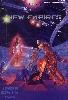

O4 Amphibian Desire
(Aqaaran)

©1996 Pat Morrissey
Galactic Empires is a trademark of Companion Games, Inc.
All cards & rules are
copyright © 1994, 1995, 1996, 1997 Companion Games, Inc.
Illustrations added for clarity by
John Bullington.
Illustrations and Artwork added by Eric B. Smith.
Rulebook v2.1 revision by Eric B. Smith.
Last modified on 09/19/22.
Return to The Galactic Empires Card Museum.
Download this rulebook
as a single ZIP file.
Download the original Version 2.0
Rulebook (PDF)
Beginner's Note: A number of the rules sections have beginner's notes associated with them. It is recommended that new players follow the suggestions contained in these beginners' notes.
|
R/O2 Shipping Delays
|
Why am I working on the revision v2.1? There
are quite a few rule additions that were never included in the Universe v2.0 rulebook,
including all information on the Allied Forces empires.
Additionally there were optional rules that were dropped from the rulebook along
the way that I've placed back, as well as adding in a few new optional rules. I've
also compiled a brief history of the various
expansion sets that were released (and a couple that weren't). I cleaned up the HTML coding from the previous online versions and added
a far more complete Table of Contents. It's important to note that the purpose
of this revision is to collect and organize the rules, not to
change them. I've tried very hard to stick to that goal.
Share and enjoy,
Eric B. Smith
On the Far Side of the galaxy, a number of
galactic empires are fighting for supremacy and survival. These empires include
numerous races from many different star systems. Galactic Empires is your chance
to represent the empire of your choice in a battle of wills and wits with
representatives of other empires. Each empire's history is explained later in
this rulebook.
Galactic Empires is a science fiction trading card game.
While in command of Sector Headquarters you conquer terrain, deploy bases,
ships, crew and special equipment; and cautiously avoid space monsters, hazards
and other occurrences. The objective: Eliminate your opponents Sector HQs,
conquering the sector and eventually the galaxy.
Players choose which of over 50 empires they will represent: Aesthetic Empire,
Andromeda Bound, Aqaaran,
Argonian
First Republic, Clydon Empire, Bolaar
Pirates, Collector Empire, Comedy
Club Network, Corporate
Aggressors, Corporate
Pirates, Council of Six, Drone, Erodi, Filarian Infesters,
Garshain, Gekonauak,
Grand Chieftain's Touring Fleet, Gray Death,
Indirigan Nomad Tribes,
Infected, Intrepid Wanderer, Invincible Loner,
J'xar, Krebiz
Capitalist Alliance, Leopan
Conquistadors, Lone Wolf, Mechad
Holdfast, Meerkats, Nobles,
Nagiridni Pirates, Orgons, Pakta'don,
Paraloid, Plasma Occupied Territory
(P.O.T.), Propagationists, Psycanti,
Scorpead Dominion, Shon-ti, Space
Dragons, Tarra'ki, Time
Knights, Tranoan
Empire, Treglean, Trochilidae, Tufor Protectorate, Vacaters
of Bolaar V, Vektrean
Mercenaries, Vicious Six, Vinciennes,
Violator, Visonic, or the Zedan Defensive
Initiative (ZDI).
Game Mechanics: Each players uses his own deck of cards
(Basic Game allows two players to use one deck). There can be as many or as few
cards in the deck as you wish. Each turn consists of applying the output from
your terrain to your bases & ships, playing cards from your hand, firing
weapons and playing more cards
The Cards Themselves: Each card is in dazzling full color
from an assortment of different artists and illustrators. Each card has the
rules needed to operate that ships, system, crew person, etc.
This card game is deceptively simple to learn. Even non-gamers
pick it up quickly. But, more importantly, the game has all the rich flavor and
history of the Far Side of the Galaxy, the strategy of spaceship combat and the
fantastic science fiction flair.
This game will be the easiest, most fun way of introducing
new players to your unique hobby than anything you've ever tried before. And
best of all, you will be able to start play within minutes. Don't be surprised
if you find yourself playing Galactic Empires more than anything else!
Playing Time: 1/2 to 3+ Hours.– Ages 10+ – Number of Players: 2-10+ (3-6 recommended)
Galactic Empires is a science fiction
collectible trading card game designed for 2 to 12 players. Each player uses his
own deck of cards that he has stocked with the cards he wishes to use for that
game. Rules limit the number and types of cards that a player may use to stock
his deck for a game. New cards are added within each new expansion.
Each player is vying for control over the same sector of space and has
established a Sector Headquarters (Sector HQ) in that sector. Players deploy
starships (play cards) in order to protect their Sector HQ and destroy the
Sector HQs of their opponents. Terrain is required to produce the supply and
energy needed to operate the ships (allocation and engagement). If a player's
Sector HQ is destroyed he is no longer capable of controlling his fleet (all his
cards are removed from play). Play continues until only a single player remains.
The following four rules are the cause of the majority of rules questions received by Companion Games, Inc. Players who concentrate on learning these four rules will have a very clear understanding of Galactic Empires.
CARDS HAVE RULES: This is the most important rule in the game! Most of the
cards have rules defined on them. The rules on the cards may contradict the rules contained in this rulebook. In that event, the
rules on the cards take precedence. Most often, reading the cards when
an obscure situation occurs will resolve the situation.
- Rules on the cards are indicated with a '-'.
- Flavor text does not have a dash and is not considered rules.
LAST REACTION CARD PLAYED HAS PRECEDENCE: This is the second most important rule. In a reaction sequence, the most recently played reaction card will take its action(s) before previously played reaction cards.
PLAYER TURN SEQUENCE: Players who follow the 7 phases of the player turn sequence closely during the first few games will learn quickly and develop a good insight into tactics. Each turn of Galactic Empires is played in a linear fashion, one phase at a time. Once a phase is completed and a player has moved on to the next phase he cannot return to a previous phase.
LIMIT ON CARD ACTIONS: Cards in play may only perform each of their functions once per complete turn (from the point of view of the controlling player). Additionally, functions of a card used as a reaction may only by used once per complete turn.
Universe Edition Starter Decks include 100 cards and this rulebook. Each starter deck contains a random set of cards, but is ready to play. It contains the specific cards needed to represent one galactic empire.
All cards have information on them in specific places:
CARD TYPE: A card's type is the letter in the top left corner of the
card. 'T'=Terrain, 'S'=Ship, etc. Occasionally a card will have 2 card types (such
as 'T/H', 'T/B, but not 'R/'). In this case the card is considered only one of those
card types (player's choice) for purposes of stocking a deck.
CARD STRENGTH: The strength of a card is the number in the top left
corner of the card next to its card type. Strength ranges from 1 to 10. Some
cards have two strengths; see the rules for the Time
Origin and Aqaarans for details.
POINT REQUIREMENTS: (Engagement Cost) The symbols listed immediately
after the type and strength. These are the points required to engage that card.
CARD TITLE: The card title is the name of the card shown above the
illustration and often repeated below. When the title below the illustration
differs from the title above, both are considered part of the cards title (e.g. Twin Planets - Verkish I & II).
GENERATED POINTS: Point symbols
on the top right of the card are points generated by that card each turn (Beginner's
Note: Cards from Alpha & Beta Editions generally had generated point symbols in the top right corner. A few cards from the Primary Edition also have point symbols at the top right
that are not actually generated points (e.g. E3 Heavy Weapons Refit). As usual, use these cards by the rules of the version that appears in later
printings).
SHIELDS/NODES/ARMOR SYSTEMS: Also on the top right,
Shields,
Nodes, and Armor Systems
protect the card from damage. These are not generated points.
FLEET MODIFIER POINTS: The symbols
above the illustration on the right, preceded by a mathematical symbol (such as
-❍❍❍)
are modifications to the points produced by a fleet. This is always explained in
the card's rules. These symbols are found in the same place as generated points.
CARD MODIFIER POINTS: The symbols
below the illustration on the right are modifications to another card. These are
almost always explained in the card's rules. If not explained in the card's
rules these modifiers are applied to the card's location.
CARD RULES: The rules of that card listed below the illustration and
preceded by a "-".
WEAPON SYMBOLS: Some cards have weapon symbols
on the bottom of the card.
Each player needs a Universe Edition starter deck to begin play. Alternatively, tournament legal player designed decks may be used. Beginning players should use a Universe Edition starter deck each and skip over Deck Construction. Companion Games, Inc. has already constructed your deck for you.
This card is separated from the deck and set aside. It is only used as a
location for keeping track of damage scored to the Sector HQ. This card is not
required to play, it is just a place to keep score. It does not count as a card
in the deck.
- The Sector HQ cannot be repaired.
- Cards may not be played on the
Sector HQ.
Beginner's Note: Skip this section for now and proceed to
the Reserve Fleet.
Each player will play with his own deck and must stock that deck with cards
based on the rules given below. During the game, each player draws only from his
own deck and maintains his own Discard Pile.
ANNOUNCE DECK EMPIRE: Players may stock their decks with cards from only one main empire. (Note that a major or minor empire may be used as the main empire of a deck if desired.) The empire you will stock your deck with is announced to all the other players before decks are stocked for the game.
STOCKING THE DECK: Each player selects which cards he wishes to use from his collection after learning the empire(s) of his opponent(s). Most players have a deck ready and merely need to insert several empire specific defensive cards or simply use their deck as is.
NUMBER OF CARDS AND TYPE: Any number of cards and types of those cards may be used within the following guidelines:
USING MAJOR EMPIRE CARDS: As stated in the Announce Deck Empire section above, players may stock their decks with cards from only one major empire. Empire cards are defined as cards with an empire's name in the card's title as well as ships, bases, dragons, psys and installations with an empire's color texture (the art pattern behind the text). Note that other card types with an empire background must have the empire's name in their title to be considered a card of that empire.
USING MINOR EMPIRE CARDS: A player may use a maximum of
1 minor empire card
in their deck for each every 4 cards of the same type that are not a minor
empire card.
- If playing a minor empire as the main deck empire, cards belonging to that empire don't need to be supported and in fact can be
used to support minor
empire cards belonging to other minor empires.
- Generic ships stocked in a deck do not count for the purposes of this rule.
- For this purpose only, Indirigan
Tribe cards (Indirigan Nomads, Nagiridni Pirate ships, Indirigan Females,
etc.) count as only 1/2 a card (do not drop fractions here).
- For this purpose only, when stocked in a deck of the empire they're allied
with, Allied cards
count as 1/2 a card and they support non-allied minor empire cards. EXAMPLE: If you have 8 Tufor
ships you may stock 4 Erodi ships. Those 4 Erodi
ships would allow you to stock 1 additional non-allied minor empire ship.
- 'D' dragon cards are considered to be the same type as 'S' ship cards for the purpose of
using minor empire ships/dragons (Beginner's Note: 'D' dragon cards are still
a separate card type from 'S' ship cards for the purposes of the Number
of Cards And Types rules above).
Optional Rule: 'I' installation cards (Comedy
Clubs) and 'P' psy cards
can be used to support 'S' ship and 'D' dragon minor empire cards.
Optional Rule: Rather than supporting minor empire cards with cards of the
same type, count all of the main empire cards in the deck
and allow them to support minor empire cards of any type. This will limit the
total number of minor empire cards a player can use, but will better balance the
number of main empire cards against the number of minor empire cards.
The reserve fleet is a number of cards that can be brought into play more or less at will, without having to rely on the luck of the draw from the deck.
CREATING THE RESERVE FLEET: Remove a number of cards of any type from your
deck equal to or less than the number of players at the start of the game. These
may be any cards of any type of your choice selected from the deck. They are set
aside, face down and are not exposed to the other players until after the ante
has been drawn.
Beginner's Note: A T4, S3, T5, S4, R/C4 ... (or cards that are close in strength to these).
USING THE RESERVE FLEET: As a Card Play, a player may swap a card from his
hand with a card in his reserve fleet. The card placed into the reserve fleet
must be of equal or higher strength then the card removed. The removed card is
placed into the hand. This swap counts as 1 of the Card Plays that a player may
make on his turn. To play this card from the player's hand to his active fleet
requires another second Card Play.
Note that the reserve fleet will always contain a number of cards equal to
the number it contained at the beginning of the game, since a card must be
played into the reserve fleet in order to remove a card from it.
RESERVE FLEET RESTRICTIONS: Cards with the word 'reserve' in the title and cards that are restricted to one copy per deck (by whatever game rules are being used) cannot be placed into the reserve fleet at the start of a game. Cards that are restricted to one copy per deck (by whatever game rules are being used) cannot be placed into the reserve fleet.
After you have stocked your deck and created your reserve fleet, shuffle the
remaining cards in your deck. Then set it down in front of you. Any player may
shuffle your deck. The player to your left then cuts your deck. After all decks
have been cut each player draws the top card from his deck and exposes it. This
card is the ante.
- The player with the highest strength ante goes first. The second highest
ante goes second, third highest third, etc. Ties are resolved by die roll. It is
best for players to seat themselves in a clockwise rotation around the table in
the order of play.
- Each player's ante becomes the first card in his Discard
Pile.
Optional Rule: The winner of the game gets to keep all of the ante cards
after he has won the game. In this case, the ante cards are set aside, not
placed into the Discard Piles. All players must agree to use this rule before
play begins.
The object of the game is to have fun. To win you must be the last remaining
player. Once an opponent has sustained 25 points of damage to his Sector HQ he
is removed from play the game.
When an opponent is removed from play the game, all his cards are removed
from play. Any card played to or against that player is placed on the owner's
Discard Pile unless that card says it can affect multiple fleets or is able to
move to new targets in different fleets.
VICTORY CELEBRATION: Any time a player scores 6 or more points of damage on
another player's Sector HQ with weapons fire, that player may immediately draw 1
card from the deck to add to his hand. (It's amazing what your civilians will do
for you when you are winning the war.).
Players may wish to alter the victory conditions so that the first player to
cause 50 points of Sector HQ damage to any Sector HQs wins. This way all players
can play to the end of the game.
- After the ante has been drawn, all players expose their reserve fleets to
the other players by placing them face up on the table in an area designated for
the reserve fleet. Care should be taken not to confuse the reserve fleet with
the active fleet that will be formed by playing cards.
- All players draw 9
cards from their decks. The first player begins his turn by following the Player
Turn Sequence. When finished, the second player goes and so on.
COMPLETE TURN: A complete turn is from the beginning of a player's turn to
the beginning of their next turn. Players keep track of the duration of their
own cards during their Allocation Phase. A complete turn is one player turn for
each player, i.e. once around the table. For cards with a duration a complete
turn starts when the card is played and lasts until the Engagement Phase of the
next turn of the player who played it. When a card uses the word 'turn' it
refers to a complete turn.
PLAYER TURN: The turn of one player only. Each player turn is described below
in the Player Turn Sequence:
1 - POINT ALLOCATION PHASE
|
1 - POINT ALLOCATION PHASE
RECORD KEEPING STEP:
- Previously played cards whose duration's
have
expired are discarded at this time as the first action of this phase. Psy
functions whose duration's have expired deactivate. Cards that produce or modify
point output generate their effect before being discarded (EXAMPLE: a periodic comet
will produce its research on its last turn).
- All Shields regenerate 1 point during this phase at
no cost, i.e. one damage point is removed from the Shields of each card with
damaged Shields in the player's fleet.
ALLOCATION:
Terrain and some other cards generate points. Generated
points are allocated to other cards as desired by the owning player. Points must
be allocated to cards each turn. All such point allocation occurs only in the
Allocation Phase.
- Only a card that will receive all of its
point requirements may receive additional points for the operation of heavy
weapons, ship systems or equipment. However, crew cards on disengaged cards can
receive points.
- Points that are not used during the Allocation Phase are
lost.
- Cards that have point requirements and generate points will
generate points if they will be engaged. Cards that modify point output will
modify point output if they will be engaged. Cards that will not be engaged
cannot generate or modify points.
SHIP MOVEMENT:
- Ships may change locations at
this time (see the Ship Movement Rules for
details).
Beginner's Note: Ship Movement is an advanced rule
introduced in the Piracy TM expansion. Beginning players may safely skip it until
they have a better grasp on the game.
2 -ENGAGEMENT PHASE
Cards that received all point requirements are considered engaged and are
placed in a vertical position in this phase. Cards without point requirements
remain engaged. Cards that did not receive their point requirements are
considered disengaged and are placed in a horizontal position (they cannot
operate).
For the sake of player convenience, the Engagement Phase may be merged with
the Allocation Phase since it is easier to allocate to one card, engage it and
then go on to the next card.
For the sake of player convenience, card may be engaged as points are
allocated to them since it is easier to allocate to one card, engage it and then
go on to the next card.
3 - PLAY CARDS PHASE A
- A player may play a maximum of 3 cards during his turn.
- All engaged
cards in play may take their action(s) once each turn. Card Actions (of cards in
play or just played) may occur only once each turn during this phase or in Play
Cards Phase B.
- Cards that cause Card Damage (damage symbols on the top
right, only) may cause their damage during this phase or in Play Cards Phase B.
4 - WEAPONS FIRE PHASE
STANDARD TARGETS: The following card types are considered standard targets
and may be fired at with weapons: terrain, ships, dragons, psys, bases,
installations, free flying shuttles and any cards that say they are destroyed
by damage.
FLEET TARGETED WEAPONS: Some weapons (Distortion
Cannons, Gravidic Distorters, Time
Phasers, etc.) must be fired at the beginning of the Weapons Fire Phase,
before any weapons volleys are declared. These weapons affect all of a given
type or types of targets in the targeted fleet (read the weapon descriptions for
details). They are not considered a weapons volley, but are resolved
similarly.
WEAPONS VOLLEY: Each weapons
volley consists of 5 steps:
a - Declare weapons fire to a single target (card or stack of cards) from any
number of engaged cards in the firing player's fleet with one or more unfired
weapons. This is a weapons volley.
b - Players may play reaction cards in
reaction mode. The firing player cannot react unless another player has reacted.
c - Resolve the effect of reaction cards.
d - Resolve
the effects of the weapons volley, i.e. target destroyed or damaged, etc.
e - Repeat the above sequence, declaring weapon volleys to new
targets until there are no more targets or there are no more weapons to fire. A
player may declare only one weapons volley against each target during a Weapons
Fire Phase.
5 - PLAY CARDS PHASE B
A player may only play 3 cards during his player turn. Cards played during an
earlier phase Play Cards Phase A and during the Weapons Fire Phase count against
this limit and may prevent any cards from being played during this phase.
Engaged cards that did not take their card actions or card damage in Card Play
Phase A may take them now.
6 - DISCARD CARDS PHASE
- Remaining unused Card Plays may be used to discard cards from the hand.
- A player may discard any number of cards from his active fleet.
- Cards that are yours but under the controll of another player or cards that you
cannot control because of the effect of a card played against that card may not
be voluntarily discarded (not even by that other player) until you regain
control. Note, this card could indirectly be discarded by discarding the basis
of the stack to which it is played. EXAMPLE: A C9 Admiral with an O9 Insanity
played against it may not be discarded, however the B4 Base Station on which the
C9 Admiral is played may be discarded, thereby discarding the insane admiral.
7 - DRAW CARDS PHASE
If the player has 9 or fewer cards in his hand, he may draw 2 cards from the
deck. If he has 10 or 11 cards in his hand, he may draw 1 card from the deck. If
the player has 12 or more cards in his hand, he draws 0 cards from the deck.
- If there are no more cards in the deck the player cannot draw cards, i.e.
the Discard Pile is not reshuffled.
- The player who just completed his turn
advises the next player that he is finished.
Beginner's Note: Galactic Empires is a step-by-step game. Once you do
something, it is too late to go back to an earlier phase in the sequence of play
and do something there. Mistakes happen and you will make mistakes. When
learning it is OK to go back and redo things, but when playing on a competitive
level you will be expected to go on when you make a mistake, sacrificing the
portions of your turn you forgot to use.
You may want to refer to the Narrative
Example to get a better understanding of turn sequence.
This is the most important rule in the game! Most of the cards have rules defined on them. The rules on the cards may contradict the rules contained herein. In that event, the rules on the cards take precedence.
When different versions of the same exactly identical card exist, all versions play as the most recently printed version. Cards are considered exactly identical if they have the same type, strength, and card name (both above and below the illustration). Vektrean asteroid bases printed as 'T' cards are considered identical to their 'T/B' version.
TURN 1 RESTRICTIONS: Only terrain cards may be played during the first turn.
Reserve fleet swaps may also be made on turn 1.
TURN 2 RESTRICTIONS: Any card types may be played on turn 2 except that a
maximum of 1 ship, base, dragon, installation or psy card may be played to the
active fleet.
All cards with point requirements (on the card; regardless of modifiers
elsewhere in play) are played in the disengaged position. Cards without point
requirements are played engaged. Cards are not considered to be in play until
after they have been played.
Beginner's Note: Since point allocation is the first phase of the player
turn, those cards with point requirements which were not in play during the
Allocation Phase could not receive any points and therefore could not be engaged
during the Engagement Phase.
- A disengaged card may not take any action. Cards may be played to disengaged
cards, opponents may score weapons damage on them, etc.
- A disengaged ship or base can only operate its Shields, conduct repairs by
use of repair points and operate passive equipment.
- Engaged cards on disengaged cards function. The only exceptions are that
crew must be engaged to use an ability card and non-passive equipment on a
disengaged unit must be disengaged.
- Rules on a disengaged card may still affect the disengaged card. Rules such
as how the card is destroyed, specific immunities, etc. are not affected by
being disengaged.
Once a card is played it cannot change location unless a rule on that or another card causes its location to be changed. Only ships and dragons can voluntarily change location once each turn during the Record Keeping Step (see the Ship Movement Rules).
If two of the same cards (or possibly cards that do the same thing) are played to the same location, they can both function. Generally, if two or more cards are affecting a location, all of them will apply. Exception: Terrain modifiers.
A there-and-back mission is a means for crew cards to assault an opponent location by transporting to that location with a shuttle, fighter or transporter, making an attack and transporting back. There-and-back missions are a 3 step process:
1- TRAVEL THERE: The transport to the target location.
2- THE MISSION:
The crew's card action (Beginner's Note: many crew perform functions at their
location, these crew use equipment to do there-and-back missions to affect
opponent locations).
3- TRAVEL BACK: The transport back.
- Any of these 3 steps can be reacted to.
- When played in reaction mode,
shuttles, fighters and transporters may be played simultaneously with any
reaction crew card.
- Shuttles and fighters travel with the crew, while
transporters remain at their location.
- Any crew card can perform a there-and-back mission to
perform one of its card functions, even if the crew card doesn't explicitly say
it can. EXAMPLE: An R/C7 Doctor can go on a there-and-back mission to negate an
injury or illness at another location.
For a more detailed explanation of There-and-Back Missions see the article on Shuttles & Transporters in Galactic Fire #2.
Once played, cards remain in play until the actions of another player cause
them to be removed from play and discarded (firing weapons, effects of
occurrence cards, etc.). Some cards are instant and after applying their effects
are immediately discarded (discarded after use). Some cards last a specific
amount of turns and are discarded after that many turns have elapsed.
- Any card that reaches a strength of ZERO is discarded.
- When a card
is discarded all cards played on or against it are discarded also (except ships
and dragons in play on destroyed terrain cards and cards played to or against
several locations).
- Voided Card Plays: Cards that state they are
discarded after use and which are voided by a reaction card are discarded even
though they did not get used.
- Returned to the Hand: When a stack of cards
is returned to the hand, each card in the stack is returned to its respective
owner's hand.
Cards placed in the Discard Pile must remain in the order in which they are discarded. Some cards require a search through or removal from the Discard Pile and so the cards should not be disordered. When cards are discarded as a group they may be placed on the Discard Pile in any order, but once in the Discard Pile they may not be reorganized. Any player may look through any discard pile at any time.
Cards in play may only perform each of their functions
once per complete turn (from the point of view of the controlling player).
Additionally, functions of a card used as a reaction may only be used once per
complete turn.
NOTE: Cards were always limited to active once per turn. The fact
that "each turn" was listed on most cards led some people to believe that cards
without this clause could function multiple times.
Only cards designated with an 'R/' may be played in reaction to an opponent
player's actions on an opponent's turn. They cannot be played in reaction on
your own turn unless reacting to an opponent's reaction card play. Reaction card
actions occur just before the action they are reacting to.
- Cards played in reaction do not count against the Card Play limit when
played during another player's turn. They DO count as a Card Play when played
during your own turn and may not be played if all Card Plays have already been
used.
A reaction card may only be played in reaction mode if one of its functions
is used at the time it is played. Any of the reaction card's functions may be
used when it is played (regardless of the play phase), except reaction cards can
only fire their weapons if played in an opponent's Weapons Fire Phase and only
if those weapons do not need resource points to function.
- Cards played in reaction can generate points and apply them to another
card. They cannot cause that card to engage unless they specifically say so.
Reaction cards that are not played in reaction mode will not generate points
outside of the Allocation Phase.
- Reaction cards cannot be played in phases
where the playing player takes no actions.
- The following things can be
reacted to: Point allocation, a card being played, a card action, weapons fire,
and the discarding of cards during the Discard Phase.
- If a card is removed
from play as a reaction before being resolved, the card will be resolved upon
returning to play.
LAST REACTION CARD PLAYED HAS PRECEDENCE: In a reaction sequence, the most
recently played REACTION card will take its action(s) before previously played
reaction cards.
REACTION MODE ACTIONS OF CARDS ALREADY IN PLAY: Some cards can perform
actions in reaction mode even if they are already in play as long as they are
engaged. These cards must state, "As a reaction, can ..."
EXAMPLE: Minesweepers (which can prevent an opponent's mine from doing
damage) and escorts (which can intercept some incoming damage directed at
certain other ships) may take these actions as if they were played in reaction
mode.
- Reaction cards already in play CANNOT react unless they actually state "As
a reaction, ..."
A player's fleet has a command limit. The command limit is the maximum number
of cards that require a command slot that a player may normally have in play.
- Cards that consume 1 command slot each include ship, dragon and base cards
of strength 3 or higher.
- Cards that consume 1/2 of a command slot each
include all psy cards, strength 2 ships, strength 2 dragons and strength 2
bases.
- No other cards consume command slots.
- Combined cards require
the command slots of their combined strength.
During the Allocation Phase, each player automatically generates a number of
command points equal to the number of players that started the game (this does
not change as players are eliminated). This number, plus any other generated
command points, is the number of command slots that player has available for
that complete turn.
EXAMPLE: If there are four players then each player may have up to four cards that
consume command slots in play at any given time. If a player has a ship in
his hand, but all of his command slots are in use, he may not play it until a
command slot is available.
- Cards that generate command points only do so in the Allocation Phase.
Therefore, a card just played that generates command points cannot use that
command point to create a command slot until the Allocation Phase of the next
turn.
- If a player has full command slots and loses some command points he
does not have to discard cards that consume command slots, but he may not play
another card requiring command slots until a free slot becomes available.
- Cards that require command points as a point requirement cannot receive command
points during the Allocation Phase until all other cards occupying a command
slot have had command points allocated to those slots.
- Unused command
points always create empty command slots for that player.
- When calculating
the number of command slots used, never drop fractions.
MINOR EMPIRE COMMAND RATING BONUS: One minor empire ship (but not a generic ship) in play in the fleet does not consume a command slot and may be played even if all command slots are full. However, if that minor empire is being used as the main empire of the player's deck, then ships of that main minor empire do not get this benefit.
The owning player controls the actions of his cards unless an opponent has
assumed control by the means of some card. In order to assume control of an
opponent's card that requires a command slot, the player assuming control must
have a command slot available for that card. Once controlled by an opponent that
card does not occupy a command slot in its original fleet.
- On the turn that control of an engaged opponent card is established, that
card can be used normally if it was engaged when control was established. If a
controlled card has point requirements the controlling player must allocate
these points during his Allocation Phase in order to use that card on subsequent
turns. Phasers on the controlled card can be used normally, but heavy weapons
can only be used if they were armed (and not used) by the previous controlling
player.
- A controlled ship protects the Sector HQ of the player controlling
it. A controlled psy protects the Psy Network of the player controlling it.
- Control may revert back to the owning player even if there is no command
slot available.
The card type rules specifically state where that card type is played.
When a card is played against an opponent, it is usually best to keep the
bottom end of the card facing toward the person who owns the card (upside down
to the affected player) and place a color marker bead on the card. This will
help to prevent confusion when cards are discarded or otherwise returned to
their owners if each player is using different color beads.
CARD PLAY TERMS:
ON: Many cards are played on other cards. This generally means they become
part of a stack of cards originating with the card they are played
on.
AGAINST: Cards played on an opponent card are played against that
opponent's card.
PLAYED TO: Many cards say where they must be 'played to'.
This refers to the actual location the card must be placed when it is first
played. The card may change location afterwards.
BASIS OF A STACK: Any card
with other cards played to or against it, but not the card(s) played to or
against it.
THE FLEET: All cards played by a player are in that player's
fleet. This includes cards played against an opponent fleet.
Whenever a fraction is generated by the mechanics of the game it is dropped (not rounded). The rules require that full points are required to do things. Thus 1/2 a repair point does nothing, 3/4 of a damage point does not destroy a ship with only one point left, etc.
During the Weapons Fire Phase, the firing player designates a target and further designates how many damage points are being applied to the target, which units from his fleet are firing and which weapons they are firing. This is a weapons volley.
DAMAGING THE SECTOR HQ: The 25th damage point applied against it destroys a Sector HQ or Psy Network.
- A Sector HQ or Psy Network may only be fired at if there are no cards
protecting it (ships, dragons or psys).
- Only ship, dragon, or psy cards may fire at a Sector HQ or Psy Network.
Equipment cards in play on these cards may also fire at the Sector HQ or Psy
Network.
SPLASH DAMAGE: Splash damage may only occur when a player plays a card in reaction to weapons fire at a target that the reaction card would protect. If there is sufficient damage to destroy the reaction card then it is destroyed and then the remaining damage is applied to the original target.
VOIDED DAMAGE: Weapons fire which becomes illegal due to reaction card play is lost and cannot be reapplied.
Use dice (6 sided and always the least number of dice possible). If a ship
takes four points of damage place a die on that card with the four showing. As
damage is inflicted and repaired, simply change the number on the die to reflect
the current amount of damage on the ship.
- Damage to Shields and damage to the ship itself should be tracked
separately by using two different color dice. Dice should also be used to keep
track of research points applied to monsters, current strength of Mechad EMFs,
etc. Try to be consistent; always use red dice for damage to ships and bases and
monsters, green for Shields, white for applied research points, black for
permanent damage, etc.
- Dice may also be used to keep track of duration on
cards that only last a specific number of turns.
Occasionally, an interaction between two or more cards might become difficult
to resolve. This is extremely rare and even if it occurs players should be able
to come to an agreement about how to resolve the interaction. These interactions
are resolved by vote and play continues as usual (resolve ties with a die roll).
Unresolved interactions will be formally resolved in the Galactic Empires
bimonthly magazine, Galactic Fire. After resolution in Galactic Fire, votes are
no longer used. Call Companion Games, Inc. at 1-607-XXX-XXXX to receive your
free first issue. Subscribers receive an exclusive card with each issue!
Companion Games, Inc. answers rules questions by several means (on-line,
phone, mail, at conventions, etc.). All answers given by Companion Games'
personnel are tentative until published in Galactic Fire.
There are many different types of points generated by terrain and other cards. The representative symbol is given with each.
❍ ECONOMY: Economy points are the most
useful type of points. They can be declared and used as supply points, energy
points, ammunition points, research points, repair points or healing points.
During the Allocation Phase of each turn the player declares what his economy
points will be used for. Each economy point may be used as a different point
type each turn.
- Economy points are not modified by point modifiers that modify other types
of points even when the economy points are used as that point type.
● SUPPLY: Supply points are consumables needed by many cards in order to function.
✸ ENERGY: Energy is the power needed for operation.
◼ AMMUNITION: Ammunition points are required to fire heavy weapons. The number of heavy weapon points are listed at the bottom of some cards by the use of heavy weapon symbols (identical to the ammunition symbol). A maximum of 1 ammunition point may be allocated to each of these heavy weapons.
❏ RESEARCH: Research points represent scientific study.
♦ REPAIR:
Repair points represent the
ability to fix damage. Each repair point may fix one point of damage. Only a
card in your active fleet may be fixed with repair points. There are two types
of repair points, the general repair point and the healing point.
Repair Point: A repair point may only be used to fix damage to a Shield point
or a strength point on a ship card (but not a dragon card), or a base card. It
may also be used to repair damage on a terrain card, but not card damage applied
to the structure of a terrain card.
Healing Point: A healing point is always designated by card rules. A healing
point will 'cure' a point of damage (or applied research points) on a being
(dragon, psy, monster, etc.). The being type will always be specified on the card
generating the healing point(s). An economy point used as a healing point may
NOT be used to heal monsters, but may be used on all other types of beings.
✪ COMMAND: Command points allow extra ships, bases, dragons or psys to be in play. Command points are generated during the Allocation Phase. Each command point creates a command slot at that time (see command limits).
❧ LOBSTER: Lobster points are found in the Comedy Club on the Far Side of the Galaxy expansion. Lobster points allocated to a monster equal to the monster's strength disengages the monster for one complete turn.
✖ DAMAGE: Damage points cause one
point of damage each.
General Damage Points: They are only found at the top right of cards that
cause damage. This damage is considered card damage not weapons fire.
Weapon Damage Points: This symbol is used to represent several different weapon types
at the bottom of the card (see the weapon rules for details on these weapons).
✧ SHIELD: Shield points are found at the top right of most ship and base cards. Shields always function (even if the card is not engaged). Each Shield point is eliminated by one point of damage. After the Shields are gone, the unit may sustain structural damage. One Shield point is automatically repaired during the Allocation Phase of a player's turn; any number may be repaired with repair points.
➎ ARMOR SYSTEM INDICATOR: Leopan ships use Armor Sytems rather than Shields. Armor System indicators are located at the top right of cards equipped with armor. Only one such symbol will be present and it will contain a number indicating how many uses of that Armor System are allowed before the Armor System no longer works. See the Armor Sytems rules for a full description of how these work.
✦ NODE: Node points are used only on Mechad ships. Energy allocated to the Electromagnetic Field (EMF) is multiplied by the number of Nodes to determine the Strength of the EMF. See the EMF rules for a full description of how these work.
✜ PHASER: Phaser points are found at the bottom of many cards. The number of Phaser points shown indicates how many Phasers the card has. Phasers cannot cause structural damage to terrain (see the weapon rules for Phasers). Any weapon represented with a Phaser point is considered a Phaser regardless of the name used.
◼ HEAVY WEAPON: Heavy weapons are different for each empire. For instance, the Krebiz use Sabots, the Argonians use Energy Fluxes and the Dragons use Breath Weapons. Each heavy weapon requires one ammunition point to fire. Heavy weapons can damage terrain (see the heavy weapon rules).
Beginner's Note: Beginners' should start out by reading the Ship and Terrain card descriptions first, then move on to the other card types. Card types listed with a * before them do not appear in Primary or Universe Editions, so can be safely skipped by beginning players.
|
A1 Infestation Inhibitor
|
|
A6 Captain's Bluff
|
ABILITY CARDS: Ability cards are designated with an 'A'. Ability cards modify
the characteristics or abilities of other cards.
- Ability cards are played to crew in your fleet unless they specify they can
be played elsewhere.
- An ability card may not be engaged on a disengaged crew.
|
B6 Evil Temple
|
BASE CARDS: Base cards are designated with a 'B'.
- A base card must be played on a terrain card. A base cannot be in play
independent of terrain. The terrain card on which a base is played may not be
targeted by weapons fire until the base is destroyed. A base will not protect a
terrain card from card damage. Excess damage applied to a base does not splash
to the terrain card unless the base is played in reaction mode.
CREW CARDS: Crew cards are designated with a 'C'.
- A crew card is played on a ship, base or
terrain card. Most crew cards have
an illustration of a specific empire being, this illustration is only an example
and does not necessarily mean that the crew card may only be used in a deck of
that empire. Only crew cards with an empire's name in their title are empire
crew. See the deck stocking rules.
- Crew cards with point requirements may have points allocated to them even if
their location is disengaged.
DRAGON CARDS: Dragon cards are designated with a 'D'. Dragon cards are a
subset of 'S'hip cards.
- Dragon cards are exactly the same as ship cards except no equipment cards,
crew cards or occurrence cards may be played to them or against them. Note that
it is possible for a card action from one of these card types to affect a dragon
(EXAMPLE: A mine card is an equipment card. It is played on a friendly ship. Its
card action is to cause damage to an enemy ship. Therefore, it can cause damage
to a dragon).
- Effects that apply to ship cards, including weapons fire, monsters, etc.
also apply to dragon cards.
- Dragon cards can be played independently or on a terrain card. A dragon does
not block damage to the terrain on which it is played nor is the dragon
destroyed if the terrain is destroyed.
- Some dragons may be played to other dragons. When this happens, both dragon
cards are considered one dragon combining their strength.
|
E5 Antimatter Mine
|
EQUIPMENT CARDS: Equipment cards are designated with an 'E'.
- An equipment card may only be played to a ship or
base.
- Equipment cards have a small 'P' or 'NP' beneath the bottom left corner of
the art window. This indicates whether the card is passive or non-passive.
Passive equipment is always played in the engaged position. A non-passive
equipment card without point requirements is played in the same position
(engaged or disengaged) as the unit to which it is played. A non-passive
equipment card cannot be engaged on a disengaged unit.
EMPIRE SPECIFIC EQUIPMENT: Some equipment cards are indicated as being the
exclusive or foreign technology of a specific empire. These cards may only be
engaged when in play on a unit of that empire.
- Exclusive Technology: Other empires cannot use exclusive technology.
- Foreign Technology: Foreign Technology cannot be used by other empires except
by means of a special card that specifically permits the use of foreign
technology, such as an engineer, some science officers, etc.
- Adapted Technology: Empires defined as being able to 'adapt technology' can
use foreign technology of other empires normally and may use exclusive
technology by means of a special card that specifically permits the use of
foreign technology, such as an engineer, some science officers, etc. (See
Vektrean, Bolaar, and Allied
rules.)
*FIELD CARDS: (found in Powers of the Mind TM and
later sets)
Field cards are designated with an 'F '.
- Field cards are played on terrain cards in the fleet.
- A maximum of one field card may be played to a terrain card.
- Field
cards are only destroyed by the destruction of the terrain card on which they
are played.
AGENDA CARDS: Agenda cards are designated with a 'G'.
- Each agenda card has a hidden agenda rule and/or an exposed agenda rule.
- Hidden agendas must be accomplished entirely before the agenda card is
played. When the hidden agenda is accomplished, the agenda card is immediately
exposed from the hand (not a Card Play) and the benefit is immediately gained.
- Exposed agendas are played prior to accomplishing the agenda. Their
benefit cannot be gained until 1 complete turn after the agenda card has been
played. After that turn, the benefit is immediately gained when the agenda is
accomplished.
- A player may not accomplish the same agenda twice (two
exactly identical cards) during a single complete turn.
- When an agenda has
been accomplished, place it on the Sector HQ (or Psy Network).
- A player who accomplishes 25 strength points of agendas immediately has his
Sector HQ or Psy Network restored to 25 points. At this time, all agenda cards
on the Sector HQ are discarded. Any player may only do this once per game.
Subsequent agenda cards are discarded when accomplished.
HAZARD CARDS: Hazard cards are designated with an 'H'. Hazards represent the
dangers of space travel.
- Each hazard card indicates where it is played and what its effects are.
Hazard cards that do not say where they are played, are played to or against
the card or cards that they affect. Hazards cards that affect things other
than cards (weapons fire, opponent volleys, etc.) are considered played to the
owning player's fleet.
*INSTALLATION CARDS:
Installation cards are designated with an 'I'. The lost empire known
only as the 'ancients' left gigantic stellar installations throughout the Far
Side. While attempting to conquer a given sector these
abandoned installations were occasionally used by the various empires.
- Installations are played independently.
- They are not considered
bases.
- Crew Complement: The player who plays an installation card is assumed to have
a 'crew complement' on board the installation equal to the strength of the
installation card plus the strengths of all of his engaged crew cards in play on
the installation. All other players have a crew complement equal only to the
summed strengths of their engaged crew cards in play on that installation.
- Control: The player with the highest crew complement (ties go to the
installation player) controls the installation.
- Transport: Crew cannot be played directly to installations; they must be
moved (via transportation) to the installation. Ancients ('N' cards) are an
exception and may be played directly to installations.
LUCK CARDS: Luck cards are designated with an 'L'. Luck cards deal with lucky
and unlucky situations.
- Each card defines how the luck card is played and how it works. Luck cards
are played to or against the card or cards that they affect. Luck cards that
affect things other than cards are considered played to the owning player's
fleet.
|
M3 Cyber Beast
|
|
M3 Invinco Guardian
|
|
M4 Harvesters
|
MONSTER CARDS: Monster cards are designated with an 'M'. Space monsters are
creatures or beings which live in space and often cause damage to terrain or
starships.
- Each monster card defines where it is played, how it works, what damage (if
any) it causes and how it is killed or negated.
- Monsters may only be repaired by cards that generate monster healing points.
- When a monster's location (the card or cards it is affecting) is discarded
the monster is also discarded.
- A monster with multiple locations or which can change locations is not
discarded until the last of these locations is discarded.
- An 'M' space
dragon is not a 'D' dragon card.
*ANCIENT CARDS: (found in
Galactic Invaders TM) Ancient cards (no, not millennia old GE cards gated in from the future and
sold on eBay)
are designated with an 'N'.
- Ancient cards are a subset of 'C'rew cards. Ancient cards are treated as crew
cards for all purposes. Cards that can be played on crew can be played on
ancients, and anything that can affect crew cards can affect ancient cards.
- Ancients may be played directly to installations.
- Ancients in play on
an installation may move to another location without transportation once each
turn (not on a there-and-back mission). If in play on an installation being
discarded, they may be moved to another location.
- A player with an engaged
ancient in play on an installation (under his control) may target opponent
Sector HQs, Psy Networks or the Time Origin with the weapons of that
installation
IMPORTANT: Ancients are a subset of crew cards, but crew
cards are never treated as ancient cards.
- Only 'N' cards are considered
ancient cards.
NOTE: Only one Ancient card was ever printed, the N3 Traveller
from Galactic Invaders TM. More were planned in the Realms
of the Ancients TM expansion that was never released.
|
O9 Illness
|
|
O5 Evasive Maneuvers
|
OCCURRENCE CARDS: Occurrence cards are designated with an 'O'. An occurrence
card is simply a significant event.
- Each card defines how the occurrence is played, how it works, what damage (if
any) it causes and how it is negated (if that is possible). Occurrence cards are
played to or against the card or cards that they affect. Occurrence cards that
affect things other than cards are considered played to the owning player's
fleet.
*PSY CARDS:
(found in Powers of the Mind TM and other expansions) Psy cards are designated with a 'P'.
- Psy cards are a subset of 'C'rew cards. Psy cards are treated as crew cards for
all non-psy-specific purposes. Cards that can be played on crew can be played
on psys, and anything that can affect crew cards can affect psy cards.
- IMPORTANT: Psys are a subset of crew cards, but crew cards are never
treated as psy cards.
- Only 'P' cards are considered psy cards.
|
Q5 Long Range Transporter
|
*HEADQUARTER CARDS:
Headquarter cards are designated with a 'Q'.
- Headquarter cards are played to the Sector HQ.
- Headquarter cards are
destroyed by weapons damage equal to their strength. They may only be targeted
by weapons eligible to target the Sector HQ (if the Sector HQ is not exposed, 'Q'
cards are not exposed).
- Only 'Q' cards may be played to or against 'Q'
cards.
- Headquarter cards do not protect the Sector HQ.
NOTE: Only three 'Q' card was ever printed, they were all Promo cards.
SHIP CARDS: Ship cards are designated with an 'S'.
- There are two basic types of ship cards: Empire ships and generic ships.
Empire ships have a specific empire written on them such as Argonian, Bolaar,
etc. Generic ships (freighters, tugs, etc.) can be used by any empire. Generic
ships do not have an empire stated on them and have a blue lined background.
Both types of ship cards work as follows:
- Ship cards can be played independently or to a terrain card. A ship does not
block damage to the terrain on which it is played nor is the ship destroyed if
the terrain is destroyed.
- Some ships may be played to other ships. When this happens, both ship cards
are considered one ship combining their strength, Shields, and weapons.
TERRAIN CARDS: Terrain cards are designated with a 'T'.
- The main function of terrain cards is to provide resource points.
- The
only cards that can cause card damage to the structure of terrain cards are
those cards that specifically state they can damage terrain.
- Heavy weapons
are the only weapons that CAN cause damage to the structure of terrain cards.
- Terrain cards are played independently and can become the basis of a
stack.
Terrain Output Modifiers:
- A number of cards (freighters, tugs, bases etc.) modify the point output of
terrain cards. Positive additive modifiers are not cumulative; only the greatest
modifier is used (i.e. a terrain with two freighters, +2 economy each, only gets
a single +2 modifier). Positive multiplicative modifiers are not cumulative;
only the greatest modifier is used (i.e. a terrain with a base station, 2x
supply and a starbase, 3x supply, only gets the 3x modifier not a 6x).
-
Always apply additive modifiers first, and then apply multiplicative modifiers.
- Some terrain may be played to other terrain. Terrain that combine are
considered one terrain combining their strength and output. Rules on a specific
element of a terrain stack do not necessarily apply to the entire stack.
EXAMPLE: A
T5 Ring System played to a T3 Crystal Planet (immune to weapons fire) may have
up to 5 points of heavy weapons damage applied to it It will not be discarded
until the remaining 3 points are applied to the crystal planet portion as card
damage.
RULES CARDS: Rules cards have no designation and no game effects. These cards include the Points Symbol card, the Sector HQ cards included in Universe Edition Starters, and the Rules Cards from Allied Forces. They are meant only to be references and cannot be stocked in a deck.
ARMOR
SYSTEM: Leopan ships use Armor Systems
rather than Shields. Armor System indicators
(➎) are located at the top right of cards equipped with armor. Only one such symbol will
be present and it will contain a number indicating how many uses of that Armor System
are allowed before the Armor System no longer works.
- Armor Systems may only be used once every time damage would be applied to
the unit's structure. They may not be used, however, to prevent damage from
cards or weapons which specifically cause structural damage [boarding
parties, Shield Penetration Device, Tarrac
Projectors (structural portion only), etc.].
- When an Armor System is used against an opponent volley (or other source
of damage), the damage applied as structural damage is decreased by the current
strength of the Armor System. After each use, the Armor System decreases 1 point
in strength. Use a die to indicate the current strength of the Armor System.
- Ships possessing an Armor System are not required to activate it. Armor
Systems are passive and can be activated on engaged or disengaged ships.
-
Shields are always damaged before Armor Systems can decrease damage. Armor
Systems only affect structural damage.
- All other reductions to opponent
volleys are applied before Armor Systems may be activated.
- Armor Systems
cannot be repaired.
AUXILIARY
SHIELDS: Tarra'ki ships mount secondary Shield
banks. The stronger Shield bank applies (main bank on
ties). Both regenerate.
NOTE: The original rules card doesn't specify, but Shield refits should apply to
both
the primary and secondary Shield banks.
DRONE SPECIAL SHIP SYSTEMS: Drone
ships use a variety of special ship systems.
- Points in parenthesis represent a single system. Multiple
points not in a parenthesis indicate multiple systems that may be used
separately.
Deflector Grid: Whenever damage is applied to this ship, damage up to the
strength of the grid may be transferred to any unit.
Tractor Beams: Activated against a ship as a reaction, tractoring the
ship for 1 turn or until tractored by another tractor beam. The tractored ship
may only fire at this unit. Current fire from the unit is intercepted.
Command Encryption: Prevents miscommunications and command disjunction
from being played against the fleet by a player without a cryptologist in their
fleet.
ELECTRONIC WARFARE SYSTEM: Each
Electronic Warfare Systems on a ship costs
one energy point to activate. When an electronic warfare card ('electronic
warfare' in the title) is played to a ship with an activated Electronic Warfare System, it is not discarded after use. During the Record Keeping Step of the
next turn, the electronic warfare card is placed back into the hand. The first
electronic warfare card (and second for ships with 2 Electronic Warfare Systems)
played always consumes an Electronic Warfare System and cannot be discarded
after use.
There are only three cards that may be used with an
Electronic Warfare System: R/O3 Defensive Electronic Warfare (UE/PE),
R/O3 Offensive Electronic Warfare (UE/PE),
R/O3 Offensive/Defensive Electronic Warfare (UE/PE).
ELECTROMAGNETIC FIELD (EMF): Mechad ships use an
Electromagnetic Field (EMF) defense instead of
Shields. The EMF has a strength equal to the number of Nodes
(✦) multiplied by the
number of energy points allocated to the EMF. Note that most Mechad ships have
only one node and so the field strength will usually be equal to the number of
energy points applied to the node. The maximum strength of the EMF is twice the
strength of the ship; any energy applied in excess of this amount is wasted. The
EMF strength represents the number of defensive points the Mechad ship has for
that turn.
A Mechad ship that is not engaged during the Engagement Phase, or a ship
which is played from the hand is given a free EMF strength equal to the strength
of the ship. If a Mechad ship is disengaged by any means other than during the
owning player's Engagement Phase, the EMF strength does not change. (EXAMPLE: An
M3 Alien Parasite card is played against an engaged S5 Mechad Heavy Cruiser with
a current EMF strength of 10. Although the ship is immediately disengaged by the
parasites, the EMF strength remains 10.) The EMF may not be repaired; it must be
re-energized from scratch during each Allocation Phase.
- Shield refits may not be applied to Mechad ships.
- The EMF will not
block the function of transporters.
- The EMF is not treated as Shields for
the purposes of cards that affect Shields.
When tracking EMF strength, it is best to "count down" by using a die to
indicate the current strength of the EMF rather than the damage that it has
sustained.
- The EMF may only be increased in strength by an amount equal to the
strength of the ship. EXAMPLE: A strength 7 ship has an EMF at strength 7, it
sustains 4 damage, during the next Allocation Phase it can be re-powered to a
maximum strength of 10 (not 14, the ship's ultimate maximum).
ION & NOVA CANNONS: Erodi
ships can manipulate Ion storms and Nova explosions. 1 Ion or Nova hazard card
('ion' or 'nova' in the title) may
be played to an Ion or Nova cannon (respectively). The Ion or Nova may be
activated each turn. The hazard is discarded after use IF the energy allocated
to the system does not equal or exceed the strength of the hazard.
There are three cards which may be used with an Ion Cannon and three with a Nova Cannon: H1 Ion Storm (AF),
H2 Ion Storm (UE/PE/B/A),
H3 Pocket Supernova (AF), H4 Nova (PE/B/A),
H5 Ion Storm (UE/PE/B/A),
and H6 Type II Supernova (UE/PE/B/A).
MANEUVERING SYSTEM: Each Maneuvering System
on a ship costs one energy point
to activate. When a maneuver card ('maneuver' in the title) is played to a ship
with an activated maneuver system, it is not discarded after use. During the
Record Keeping Step of the next turn, the maneuver card is placed back into the
hand. The first maneuver card (and second for ships with 2 Maneuvering Systems)
played always consumes an activated Maneuvering System and cannot be discarded
after use.
There are seven cards that may be used with a
Maneuvering System: R/L6 Lucky Maneuver (UE/PE),
O3 Tight Maneuver (GI), R/O4 Formation Maneuver (Pir),
R/O5 Evasive Maneuvers (UE/PE), R/O5
Fleet Maneuver (GI), R/O6 Crash Maneuver (GI),
and R/O6 Surprise Maneuver (GI).
MANEUVERING THRUSTERS: Trochilidae ships are extremely agile; they avoid taking damage through the use of their Maneuvering Thrusters. Maneuvering Thrusters reduce card damage and opponent volleys (against the unit) by an amount equal to the energy applied if 1 (or more) card(s) causing the damage is of greater strength than the unit.
MINE DEPLOYMENT SYSTEM: The Tufor are masters of mine warfare and most of their ships use a device known as the Mine Deployment System (MDS). Each MDS requires one mine card and one supply point to function. An MDS permits one mine card to be used each turn but the mine card is not discarded after use, it remains on Tufor ship indefinitely. An MDS can have a supply point allocated to it prior to having a mine card played to the ship. Any mine cards played to that ship (over the number of activated MDSs) and activated are discarded after use.
PHASER MAGNIFIER: This is technically a non-heavy weapon. See the entry below.
TRANSGATE:
A J'xar ship may use each Transgate only once each complete turn as a card
action or in reaction mode. A Transgate may be used in one of two modes:
- A Transgate allows a J'xar unit to bring a J'xar ship into play fully
engaged. The ship being 'gated in' must be a J'xar ship whose strength does not
exceed the energy allocated to the Transgate.
- A Transgate
allows a J'xar
unit to be recalled from play (returning the ship stack to the hand). The ship
being 'recalled' must be a J'xar ship whose strength does not exceed the energy
allocated to the Transgate.
CARD DAMAGE IS NOT WEAPONS FIRE: Card damage is only indicated on the top right of a card with damage point symbols. Card damage is not weapons fire and only occurs in either of the Card Play phases as a card action.
STANDARD TARGETS: The following card types are considered standard targets and may be fired at with weapons: terrain, ships, dragons, psys, bases, installations, free flying shuttles and any cards that say they are destroyed by damage.
All non-heavy weapons can be fired if the card is engaged. They cost no points to be fired. Non-heavy weapons cannot damage the structure of terrain cards. All of these weapon types are distinct and different. All non-heavy weapons cause a single point of damage unless specified otherwise. The following is a list of standard non-heavy weapons: Phasers (most empires), Subspace Whips (Drone/Mechad), Seltzer Cannons (Comedy Club Network), Physical Damage (Dragon/Orgons), Time Damage Generators (Tranoan) and Cyber Damage (Cyber.Noughts).
PHASER MAGNIFIER: A Phaser Magnifier
allows a
Scorpead ship to multiply
the amount of damage done by each of its Phasers. If 1 energy point is allocated
to the Phaser Magnifier, each Phaser will do 2 points of damage; if 2 energy
points are allocated to the Phaser Magnifier, each Phaser will do 3 points of
damage. The maximum amount of energy that may be allocated to a Phaser Magnifier
is noted on the card.
- A ship's Phaser Magnifier may not be armed on a turn when the
Hyperspace Detonator is armed.
PSY DAMAGE: Psy Empire cards can cause Psy Damage. Each Psy Damage point causes 1 point of damage. Some field cards include functions which produce Psy Damage. Since Psy Damage points are considered to be weapons fire for all purposes, functions which generate Psy Damage points must be activated during Play Cards Phase A so that those damage points may be used during the Weapons Fire Phase.
PULSE PHASER: Each Pulse Phaser may be fired by a Pakta'don ship a number of times (in separate volleys) equal to the energy allocated to the Pulse Phasers.
TIME DAMAGE: Each Time Damage point causes 1 point of damage. Some cards have two printed values for Time Damage (e.g. all Time Knights). The first value is the amount of Time Damage that can be generated outside the time origin, and the second value is the amount of Time Damage that can be generated inside the time origin.
TIME PHASER: Time Phasers may be fired by a Tranoan ship once each turn, damaging all available targets in one fleet. This is a fleet targeted weapon (i.e. fired at the beginning of the Weapons Fire Phase with Distortion Cannons, Gravidic Distorters, etc.) and is not considered a weapons volley. A Time Phaser's damage is both Phaser damage and Time Damage. A Time Phaser is a Phaser and can be affected by those things that can affect Phasers.
- Heavy weapons are the only weapons which can damage the structure of a
terrain card.
- Standard heavy weapon require 1 ammunition point to cause one point of
damage. The following is a list of standard heavy weapons: Antimatter Pellet (Gekonauak),
Bi-tritium Boomerang (Indirigan), Breath Weapon (Dragon),
Ectoplasmic Trail (Orgons), Energy Flux (Argonian), Hypertrail
Seeker (J'xar), Neutronium Torpedo (Clydon/Paraloid), Plasma
Degenerator (Leopan/Trochilidae), Plasma
Stream (P.O.T./Pakta'don),
Sabot (Krebiz),
Thunderbolt Devastator (Erodi/Tufor),
Tram (Drone/Mechad), and
pretty much every Heavy Weapon used by the Comedy
Club Network.
- Any heavy weapon not defined below as a
non-standard heavy weapon is to be considered a standard heavy weapon.
AESTHETIC WEAPONS: Allows an Aesthetic ship to target individual terrain cards in a terrain stack, destroying them separately. Aesthetic damage to part of a terrain stack should be tracked separately but may not be used to destroy the basis of any part of the combined terrain stack.
DAMAGE ADJUSTER: Allows a player to pick up a marker die on the target, roll it and then return it.
DECK WRECKER: Allows a player to discard the top card on the opponent deck it's fired at.
DETONIUM BOLTS: Detonium Bolts are used by the Zedan to counter attack their enemies. Each Detonium Bolt requires 1 ammunition point to cause 1 point of damage. Each armed Detonium Bolt (whether it was fired or not) may be fired 1 time on 1 opponent turn, as a reaction to weapons fired at the ship equipped with the Detonium Bolt. This fire must be at one of the cards that fired at the ship equipped with the Detonium Bolt.
DISTORTION CANNON: Distortion Cannons are area affect weapons
used by the Mechad affecting a
huge area of space.
- Each Distortion Cannon will do 1 point of damage to every ship, base,
dragon, monster (susceptible to heavy weapons damage) and free-flying shuttle in
1 opponent fleet.
- The Distortion Cannon cannot affect terrain cards or the
Sector HQ.
- The Distortion Cannon may be used against all monsters in play
against the Mechad player's own fleet (instead of against 1 opponent fleet); in
this case, 1 point of damage is scored against each hostile monster (susceptible
to heavy weapons damage) in play against the fleet.
- Distortion Cannons are fleet targeted weapons (i.e. fired at the beginning
of the Weapons Fire Phase with Gravidic
Distorters, Time Phasers, etc.). This damage is not considered a weapons volley.
GRAVIDIC DISTORTER: A fleet targeted weapon (i.e. fired at the beginning of the Weapons Fire Phase with Distortion Cannons, Time Phasers, etc.) used by the Drone which causes 1 point of damage to each terrain not protected by a base. This damage is not considered a weapons volley.
HAND WRECKER: Allows a player to discard 1 card from the opponent hand it's fired at.
HYPERSPACE DETONATOR: The Hyperspace
Detonator is the
Scorpeads heavy
weapon. When loaded, each Phaser on the card is treated as a heavy weapon
causing 1 point of damage for each armed Hyperspace Detonator.
- A ship's Phaser Magnifier may not be armed on a turn when the
Hyperspace Detonator is armed.
- Scorpead units may not have heavy weapon refits (refits
adding heavy weapons) applied to them.
POSITRON EMITTER: A heavy weapon used by the Tarra'ki ship causing damage equal to energy allocated. The firing card takes damage equal to energy loaded after the slash. EXAMPLE: If a ship has (✸✸/✸✸) it can allocate up to 4 energy to do 4 damage; if it allocates 2 energy it can do 2 damage and will take no damage; if it allocates 3 energy it can do 3 damage but will take 1 damage itself, and if it allocates all 4 energy it can do 4 damage but it will take 2 damage.
SHIELD PENETRATION DEVICE: The Shield Penetration Device is a heavy weapon used by the P.O.T. that ignores Shields, Armor Systems and EMFs. Each Shield Penetration Device requires 1 ammunition point to cause 1 point of structural damage.
SPECIALIZED WEAPON MOUNT: Each Specialized Weapon Mount requires 1 ammunition point to cause 1 point of damage. Special Modification: When a specific heavy weapon modifying equipment card is applied to a ship with Specialized Weapons Mounts, the Specialized Weapon Mounts on the ship may be considered to be the heavy weapon type modified by that equipment card (and will then function by the rules for that heavy weapon type). Each Specialized Weapon Mount may only function as one heavy weapon type at a time. Many empires use Specialized Weapon Mounts, including the Bolaar, Corporate Pirate, Nagiridni Pirates, and Vektrean.
SWARM BOLTS: The Shon-ti use Swarm Bolts to attack multiple targets at a single location. Swarm Bolts cause 1 point of damage to the target and every eligible target not already targeted this player turn in the stack. May target terrain protected by a base, causing no damage to the terrain.
TARRAC PROJECTOR: Each Tarrac Projector requires 1 ammunition point to causes 1 point of damage. When the Aqaaran unit is functioning as a base, the weapon also causes 1 point of structural damage, ignoring Shields, Armor Systems and EMFs.
TIME BREATH: Some Dragons have Time Breath. Any number of ammunition points may be allocated to a single Time Breath weapon. Time Breath may be fired once for every ammunition point allocated to the weapon. Each firing of a single weapon must occur during a different weapons volley. Time Breath damage is both heavy weapon damage and Time Damage.
VARIABLE PLASMA: Corporate and Corporate Pirate ships use Variable Plasma as their heavy weapon. Each Variable Plasma requires 1 ammo point to function. Each will do a number of damage points equal to the number of energy points allocated to that ship for use by its Variable Plasma weapons. All the damage points from a single Variable Plasma must be scored on the same target. The range of energy points that may be allocated to a ship's Variable Plasma weapons and the number of such weapons is noted on each ship card. EXAMPLE: If a ship has 2 Variable Plasma weapons which can do a maximum of 3 points of damage each, the ship will need 2 ammo points and 3 energy points in order to do the maximum of 6 damage - 3 damage points each - with its Variable Plasmas
The major empires are the most powerful forces on the Far Side of the galaxy. Cards of a major empire may only be used in a deck if that empire is the main empire of the deck. See Using Major Empire Cards in the deck stocking rules.
|
O4 Amphibian Desire
|
AQAARAN: (found in Galactic
Invaders TM) Aqaaran society is highly religious in nature.
They are invading the Far Side in a religious crusade to convert the savage
empires to a more righteous path. Their huge framework crafts are designed to
travel through space as well as establishing a planetary base of operations.
Aqaaran units may be played as either a ship or a base. Each card has a strength
and engagement cost for both a ship and a base. Aqaaran units use Tarrac
Projectors to cut through enemy Shields.
- Aqaaran units must be stocked as the card type ('S' or 'B') with the
greater strength.
- When in play on terrain, an Aqaaran unit is considered a
base for all purposes, except that it may be moved off the terrain via ship
movement during the Allocation Phase. An Aqaaran unit in play as a base on terrain will be
discarded by the destruction of the terrain.
- When played independently, an
Aqaaran unit is a ship for all purposes.
|
C7 Doctor
|
ARGONIAN FIRST REPUBLIC:
(found in Alpha and later set) The Argonians are a race of gaseous beings who can
assume semi-solid form. They originated from within the Homecloud Nebula.
Argonian ships use circular hulls; their engines rotate about the hull allowing
Argonian ships superior maneuverability. They're armed with Energy
Flux.
|
A7 Imperial Clydon
|
CLYDON EMPIRE: (found in New
Empires TM and later sets) Clydon Citizens are of several distinct subspecies, known as
broods. Each brood serves a distinct function in Clydon society. For instance,
Blood Clydon are the common warrior caste. Several broods are of very low caste
and do not have Citizen status; some are only marginally intelligent. The Clydon
Empire is the most aggressive major empire on the Far Side. Their ships use Neutronium
Torpedoes.
Clydon cruisers carry warcraft. A Clydon warcraft functions as follows:
- Only certain Clydon ships can carry warcraft. Each card indicates if it may
do so.
- Playing a warcraft to a ship always requires a card play, a
warcraft and ship may not be played as a single card play.
- Most Clydon
warcraft are designated as cards that may be played in reaction mode. However,
they may only be played in reaction mode if:
a- they are played
independently (i.e. not played onto a cruiser) and
b- they are played during
another player's Weapons Fire Phase in order to block weapons fire that
otherwise would have damaged the Sector HQ.
- Clydon warcraft in play can
separate from or attach to a ship. When this is done (only in a Card Play Phase)
it consumes as a Card Play.
- Paraloid and Clydon cruisers capable of carrying warcraft
may carry either Paraloid or Clydon warcraft.
NOTE: The Universe Edition rulebook does not state that Clydon ships and
warcraft combine. However, the New Empires rulebook originally said the
following:
The Clydon use warcraft, which are similar in most respects to Krebiz
capsules. A Clydon warcraft functions as does a Krebiz capsule (see Krebiz
above) with the following exceptions:
The exceptions listed were the rules for Clydon above. If treated like
Krebiz capsules this would mean that warcraft do, in fact, combine with the ship
they are carried by. In addition, three cards from the later expansions (Persona
and Galactic Invaders) specifically describe warcraft as "combining"
with the ship or base they are attached to. It seems this was an accidental
omission from the Universe Edition rulebook.
This also implies that a ship may be played to an already in-play warcraft, and
a warcraft may be played to an already in-play ship, just like Krebiz ships and
capsules.
|
I2 Road Sign
|
COMEDY CLUB NETWORK: (found in Comedy
Club on the Far Side of the Galaxy TM and later sets) The Ancients left behind massive installations, some of
which were comedy clubs. Mimes and space penguins use these Comedy Clubs to
defend their CCN (Comedy Club Network) Sector HQ from hostile and often less
humorous empires. Comedy Clubs mount a large variety of Standard
Heavy Weapons as well as Seltzer Cannons.
- Comedy Club installations protect the Comedy Club Network Sector HQ while
controlled by a Comedy Club Network (CCN) player. They will not protect a
controlling player's Sector HQ unless that player is playing CCN.
- When controlled by a CCN player, the weapons on a Comedy
Club may target any player's
exposed Sector HQ, Psy Network or the Time Origin.
|
S2 Corporate Troop Ship
|
CORPORATE AGGRESSORS: (found in
Primary Edition and later sets) The Corporation was a mega-corporation performing many
operations for the
Indirigans before the latter became space nomads. When the
Indirigans abandoned their planets, the Corporation seized control of several
planetary systems within the newly formed Free Trade Zone. It was the first time
that a business operated as a galactic government. Many different humanoid and
alien beings work for the Corporation. Corporate units use Variable
Plasma weapons.
|
A2 Filarian Infester
© 1995 Melissa Benson |
| A7 Filarian Infester
© 1995 Melissa Benson |
| A8 Filarian Infester
© 1995 Melissa Benson |
FILARIAN
INFESTERS: (found in Powers
of the Mind TM and later sets) The Filarians are
intelligent parasitic beings. When an outbreak of infestation occurs, the Far
Side goes into a panic. Filarian Infesters board ships and take control of the
entire ship (and all accompanying cards).
- Infested ships are moved to the fleet of the Infester player at the moment
control is established. They are totally controlled by the Infester player and
are considered to be in his fleet. They protect the Infester player's Sector HQ,
not the ship owner's Sector HQ. Neither the ship owner nor the Infester can
voluntarily discard the ship. The ship owner cannot move cards off of it, etc.
because the ship and all the cards are treated as if they were in the Infester's
fleet (except of course when they are discarded they go into the Discard Pile of
their rightful owner). The ship is moved back to the fleet of the owning player
at the moment the infestation is eliminated. IMPORTANT: Mark controlled cards
with a color bead or marker to keep track of which cards belong to which
players.
- A Filarian deck is a standard deck, but the only ship cards
permitted are generic ship cards. No major or minor empire ships, no dragons,
and no psys are allowed.
- Filarian Infesters can only infest ships; they
cannot infest dragons, bases, or any other card type.
- A Filarian player
may not play cards on an opponent ship that he controls.
|
S6 Gekonauak Commander
|
GEKONAUAK: (found in Galactic
Invaders TM) The Gekonauak are massive organic creatures who use ships designed
to support a single organism. The Gekonauak social structure is determined by
valor in combat and often dictates the size of a given creature and his vessel.
When a Gekonauak advances within their society, they are granted a larger vessel
that they grow to fit. Their ships mount Antimatter
Pellets.
- Crew may not be played or moved against a Gekonauak ship. Only one crew in
the fleet may be in play on a Gekonauak ship. While a crew is on the ship, other
crew may not be played or moved to the ship. This does not affect any player's
ability to perform there and back missions to or against the ship.
|
C3 J'xar Gravidic Engineer
|
J'XAR: (found in Galactic
Invaders TM) The origin of the J'xar is unknown. They have technology allowing them
to cross vast distances of space at near instantaneous speed. J'x ships were
first spotted on the Far Side by a small system which claimed the entire J'xar
fleet appeared through a transdimentional gate. J'xar use Transgates to gate in
small ships directly to combat sites. This tactic proved effective against most
of the Far Side empires. Their ships make effective use of Hypertrail
Seekers.
|
R/A4 Thick Shelled Crab (Krebiz)
|
|
E2 Heavy Patrol Capsule Refit
|
|
E3 Patrol Scout Refit
|
KREBIZ CAPITALIST ALLIANCE:
(found in Alpha and later sets) The Krebiz appear similar to man-size hermit
crabs. Krebiz ships consist of two pieces: The cruiser (aft hull) and the
capsule (forward hull). Krebiz Ships fire Sabot.
- Krebiz ship cards come in three types: Cruisers, capsules and combinations.
A combination card counts as 1 card for deck stocking rules (#1-3),
but counts as 1 cruiser and 1 capsule (of that specific type) for purposes of duplicate card rules.
Beginner's Note: Universe Edition contains only combination ship cards for
the Krebiz and these ships need not be separated, etc. Simply use them as
complete ships and skip the Krebiz rules section.
If a capsule or cruiser is played by itself then it counts as 1 ship all by
itself. A Krebiz cruiser with a capsule played on it counts as one ship of a
strength equal to the sum of both cards. Only 1 cruiser and 1 capsule can
combine at one time. A combination card has information for both the cruiser and
capsule on it. It may be played as a cruiser, as a capsule or as the combination
itself, it may even be played with other capsules or cruisers representing the
opposite component. If played from the hand as one component, the other
component is considered lost and unavailable for use.
- A player may play a
cruiser and a capsule at the same time as a single ship. This counts as the play
of only one card for purposes of the three cards per turn limit, even though this
one ship may actually consists of two cards.
- A capsule may be played onto
a previously played cruiser. A cruiser may be played onto a previously played
capsule. When this happens, the two cards are immediately combined to form a
single ship. Once combined, the two components can only be separated on the
owning player's turn.
- Separating the two components requires one Card Play
to complete even though no card is actually played. Any accompanying cards,
friendly or enemy, can be placed on the cruiser or capsule in any combination at
the Krebiz player's option. Damage may be placed on the cruiser or capsule in
any combination at the Krebiz player's option, however Shield damage must remain
Shield damage and structural damage must remain structural damage. Furthermore,
damage may not be divided so as to destroy either the cruiser or the capsule.
The two cards cannot be separated if there are not sufficient command slots.
- Two components may be combined by using a Card Play, but not on a turn
when either component has been separated.
A cruiser and capsule combination may receive a number of supply and/or
energy points sufficient to engage only one component of the combination. During
the first Card Play Phase of that turn, the components must be separated as
defined above and the one component that received enough supply and/or energy
may be immediately engaged at that time, outside the Engagement Phase.
Proxy card elements can be used as temporary substitutes for separated
components of combination cards (EXAMPLE: Use a capsule or cruiser card from
Primary Edition to represent separated components).
Optional Rule: With the introduction of the Combination Krebiz ships in
Universe Edition there's no reason why players can't treat the Primary Edition
ships as combination ships. Take both cards that are part of the intended
combination ship and put one in your deck while setting the other one aside next
to your Reserve Fleet. Mark the card that you are placing in the deck somehow;
for instance using a sharpie write the name of the card that is the other half
of the combination on the face of the card you're putting in your deck, or on
the card protector; or put a small slip of paper in the deck protector with the
name of the other half into the card protector. When the card is played take the
other half and place both in play as a single ship. Thereafter they will be
treated as two separate cards; one can be discarded while the other remains in
play, or if both are destroyed then both are put into the discard pile as
separate ships. If a later card play allows you to retrieve them from the
discard pile each card must be retrieved separately.
For all intents and purposes treat both cards as if they were
in the deck, and in addition treat the combination as if it were it's own card
in the deck.
EXAMPLE: Take an S3 Krebiz Dreadnought Capsule and a
S7 Krebiz King Kraken. On the front of the Dreadnought Capsule you write
"S7 King Kraken." You place the S3 into your deck and set the S7
aside. This will count as a single S10 ship in your deck, and you may not have
another exactly identical combination. You could, however, create a second S10
using the S3 Krebiz Dreadnought Carrier and the S7 King Kraken. This would use
up two of your Entity slots in the deck, and count as two out of the three
copies of the S7 King Kraken allowed in the deck as well as counting as an
S3 Dreadnought Capsule and S3 Dreadnought Carrier.
When you draw and play the S3 you will take the S7 and place
both units in play as a single combination unit. Thereafter they are treated as
the two separate cards until the end of the game.
|
C3 Leopan Raiding Party
|
LEOPAN CONQUISTADORS: (found in Piracy and later sets) The Leopans are a feline race originated from a dark matter nebula just beyond the galactic rim. They were first encountered by the Argonians and the P.O.T. and have established territory on the Argonian edge of the Free Trade Zone. The Leopans invaded the Far Side in an effort to gain a strategic edge in their war with the Zedan for control of the dark matter nebula. The Leopans are the most violent empire ever seen on the Far Side. Leopan ships use Armor Systems instead of Shields, and they mount Plasma Degenerators.
|
C8 Mechad Overlord
|
MECHAD HOLDFAST: (found in Primary Edition and later sets) The Mechad originate from a planet orbiting a double star near the edge of the galaxy. Their homeworld is an extremely mechanized society where machines control every process. Mechad ships use Electromagnetic Fields (EMF) instead of Shields and Distortion Cannons to lay waste to entire fleets. They use Subspace Whips and Trams as their standard weapons.
NOBLES: With the introduction of the Noble starter decks in the Allied Forces TM expansion the Nobles were redefined as a minor empire. See their listing below.
PLASMA OCCUPIED TERRITORY (P.O.T.): (found in New Empires TM and later sets) The Territory is a loose confederation of several minor empires which act in concert for mutual defense but maintain politically distinct identities. Each sub empire of the P.O.T. that contributes to the common defense is known as an element. Elements include the Tequan, Peladine, Centaurians and a number of others. Some elements are larger than others and so have more ships in the combined P.O.T. starfleet. Players may elect to represent the overall P.O.T. or one distinct element. When playing one distinct element only ship cards of that element and generic P.O.T. ships may be used. Ships from multiple elements may not be used together. All P.O.T. ships in Universe Edition are generic. P.O.T. ships make use of Shield Penetration Devices and Plasma Streams.
|
P1 Visonic Muse
|
|
P9 Psycanti Sub-Master
|
PSY EMPIRES: (found in Powers
of the Mind TM and later sets) The Visonic and Psycanti
Empires are not space-farers who use fleets of starships to protect their
territory. Instead they are races of beings with advanced mental powers such as
telepathy, teleportation, matter control, mind assault, mind control, and even
possess the ability to attack ships by lash out with their minds causing Psy
Damage. They
have no territory that they claim as their own, but travel throughout space
within the areas controlled by other empires. Their sole concern is to protect
their Psy Network, a mystical mind-linking network formed by mentally accessing
a parallel universe. Only 1 psy empire can be used in a deck at one time.
Beginner's Note: If you are playing with (or against)
either of these Psy empires you will need to familiarize yourself with the Psy
Rules.
VISONIC History: The Visonics are an ancient power existing for millions of
years. They originated from a desolate desert-like planet. The recent appearance
of the Psycanti has forced them to become more active and competitive in the
politics and conflicts of the other empires.
PSYCANTI History: The recent appearance of these young upstarts has created a
stir on the Far Side. While not actually waging war on the Visonics, the
Psycanti don't hesitate to capitalize on the Visonics' misfortune (whether or
not they caused the misfortune is irrelevant).
|
R/C4 Security Officer (Scorpead)
|
SCORPEAD DOMINION: (found in New Empires TM and later sets) Scorpeads have the shape of bipedal humanoids with large mandibles and fearsome jaws as well as a long tail with a stinger which is poisonous to most species, including themselves. The Scorpead Dominion is ruled by an elected Dominator whose family has absolute power until his death, when a new election is held and a new Dominator and Ruling Family is elevated. Scorpead Ships make use of Phaser Magnifiers and Hyperspace Detonators.
|
C4 Science Officer
|
TUFOR PROTECTORATE: (found in New
Empires TM and later sets) The Tufor Protectorate is located in a region of calm
within the Tuforeous Dead Zone, a place near the galactic rim that is a site of
many strange phenomena, most especially warp funnels. The Tuforeous Dead Zone
appears to be a sort of "energy release valve" for the galaxy. The Tufor are masters of mine warfare and most of
their ships use a device known as the Mine
Deployment System (MDS). Their ships are typically armed with Thunderbolt
Devastators.
The Tufor do not control very much territory, are economically fragile, do
not have a large or powerful star fleet and in most ways would qualify as a
minor empire. However, their ships are never made available for hire by other
empires and so for game purposes they are treated as a major empire.
|
Zedan Sector HQ
|
ZEDAN DEFENSIVE INITIATIVE (ZDI):
(found in Galactic Invaders TM) The Zedan, also known as the ZDI, are a race of
assassins originating from the same dark matter nebula as the Leopans. The ZDI
are infiltrating the Far Side to prevent a Leopan conquest that would
theoretically shift the balance of power in their dark matter nebula. Zedan
Ships mount Detonium Bolts which they use to
counterattack their enemies.
Most of these politically less powerful empires may be used as the main empire of a deck but are most often used as minor empires of a deck to supplement the main empire ship cards. Cards of the following empires, when not used as the main empire of a deck, must be supported by four non-minor empire cards of the same type; see Using Minor Empire Cards.
AESTHETIC EMPIRE: (Promo release) The Aesthetic empire is dedicated to the beautification of the universe by eradicating anything they considered to be in the way of their attempt to cleanse the Far Side. See also Aesthetic & Collector Class Rules. Aesthetic ships have heavy weapons capable of damaging combined terrain separately.
|
C6 Science Officer
|
BOLAAR PIRATES: (found in Alpha
and later sets) The Bolaar Pirate Clan is a lesser empire that turned to
piracy to survive. They often hire out their ships for use by the other empires
but have a reputation for treachery and self-interest. Like the Vektreans, they
are known for adapting all kinds of equipment and technology for their own use. Bolaar ships use
Specialized
Weapon Mounts.
- Bolaar ships can use adapted technology: Bolaar ships may use foreign
technology cards without any restrictions. In addition, an exclusive technology
card may be used on a Bolaar ship if that ship possesses a card that would
normally provide the ability to use a foreign technology card.
COLLECTOR EMPIRE: (Promo release) The Collectors roam the Far Side collecting small samples of everything. Their flagship may mimic the weapons of the enemy. See also Aesthetic & Collector Class Rules.
CORPORATE PIRATES: (found in Piracy
TM and later) The second branch of the Corporate Aggressors was the
'Enforcement Division', commonly called the Corporate Pirates. This pirate group
was essentially a paramilitary agency run by the Corporation. They are a minor
empire, leasing their units to those who are willing to pay for the service.
They have access to all corporate technology, abilities, etc. Corporate Pirate
Ships use Variable Plasma and Specialized
Weapon Mounts.
Optional Rule: Since the Corporate Pirates predate the Allied
Forces rules addition, rather than giving Corporate Pirates "access to
all corporate technology, abilities, etc." treat them as Allied
- Corporate. This will slightly limit the Corporate
cards they may use,
but will allow Corporate decks to stock more Corporate Pirate cards.
CYBER.NOUGHTS: (found in Cyberspace
TM) Cybermages have just begun to detect the existence of a
growing movement within the realm of the Galacticnet. Some cybermages have begun
to warn the empires of the Far Side, others have formed an alliance with this
power and have retreated within cyberspace.
- Cyber.Nought ships are played directly into cyberspace.
- When engaged,
their ships project a holographic reality on the fabric of real space allowing
them to exist in both realities.
- Cyber.Nought ships may not be engaged
while a cyber card in play on the ship also exists at a location in the fleet
(The ship would be projecting itself on top of this fleet location). Such a ship
must move during the Allocation Phase before engaging.
NOTE: Cyber.Noughts were meant to be in the
Cyberspace TM expansion that was never released.
|
S10 Dread Savior (Infected)
© 1997 C. Henry Schulte |
O4 & O5 Wandering Desire
|
|
C1 Indirigan Female
|
|
|
S10 Garshain Battleship
© 1997 C. Henry Schulte |
S10 Intrepid Wanderer
|
INDIRIGAN NOMAD TRIBES: The Indirigan Nomads are
wandering tribes of spacefarers. They live exclusively on their starships. These
tribes often temporarily align themselves with one empire or another. Each player who has
Indirigan ships in his deck represents a different tribe (even if the cards are
of the same tribe, they are treated as different tribes for rules purposes).
Almost every Indirigan ship makes use of Bi-tritium
Boomerangs.
The following are all Indirigan Tribes: Grand Chieftain's Touring Fleet
(all PE/UE Indirigans),
Andromeda Bound (GI), Council of Six (Pro), Garshain (Pro), Gray Death
(Pro),
Infected (Pro), Intrepid Wanderer (Pro),
Invincible Loner (AT), Lone Wolf (Per), Meerkats
(Pro), Nagiridni Pirates
(NE/Pir/Pro),
Propagationists (Pro), Psychotics
(never printed), Scientists
(never printed), Vacaters
of Bolaar V (AT), Vicious Six
(Pir), Vinciennes (Pro),
Violator (Pro), etc.
- Indirigan Tribe Rule: All Indirigan ships from other Indirigan tribes (even
within the same fleet) must be destroyed before an Indirigan ship may fire on
bases or non-Indirigan ships. Indirigan ships must obey any rules printed on the
card, in addition to this rule. Indirigan ships in another player's fleet are
considered to be from another tribe.
- Indirigans as a main empire: Any Indirigan
tribe may be used as the main empire of a deck. Main empire Indirigan ships are
exempt from any weapons fire restrictions regarding other Indirigan ships.
However, the ships of other tribes and ships of the same tribe in other fleets
must still obey the rules, even with regard to the main empire Indirigan ships.
ANDROMEDA BOUND: (found in Galactic Invaders TM) This tribe, known only as 'Andromeda Bound', cut
through the Krebiz Capitalist Alliance and exited this galaxy bound for the
galaxy of Andromeda. It totally ravaged a Krebiz Capitalist Alliance core world
before leaving the Milky Way. Half of this tribe has returned. Having
encountered the Gekonauak on their intergalactic journey, they returned to warn
the Grand Chieftain.
- Andromeda Bound ships regenerate 2 Shields (not 1) each
turn.
GRAND CHIEFTAIN'S TOURING FLEET:
(all Primary and Universe Edition
Indirigans)
Grand Chieftain Marchias was the leader of the terrestrial Indirigans and led
the first pre-tribe into space. His tribe simply toured the galaxy, collecting
taxes from the other tribes whenever they were encountered.
INFECTED: (Promo release) The infected were not always the hunted
outcasts that they are today. Many years ago they were known as the Healers.
Welcomed by nearly all space faring species with open arms, the Healers traded
their vast medical knowledge for much needed supplies and resources. Unlike many
Indirigan tribes, the Healers traveled the Far Side of the Galaxy seeking to
cure the sick, not to raid the weak!
Since their infection they have self-imposed a quarantine on
their ships. Sadly, this has not stopped them from being hunted by almost every
empire in the Far Side because of the fear of contamination. Even the Mechad
seeks to destroy them, leading many to conjecture that the plague may be an
advanced form of nanotech virus.
- All Infected Tribe ships are also Infected
class and follow those rules.
INVINCIBLE LONER: (found in Advanced
Technologies TM) This tribe consisted of
only one ship, the SSCS 'Invincible Indirigan'. Noaha, the captain, often
engaged in unnecessary combat just for the challenge of doing so.
LONE WOLF: (found in Galactic
Invaders TM) Wolf was the Chief of Indirigan
Security Forces when the 'calling' came. He was unable to leave his law
enforcement beliefs behind to assume nomadic (and often criminal) ways. He
therefore took to defending various worlds from marauding Indirigan
Tribes.
- Indirigan ships in the fleet are not required to destroy
Lone Wolf ships.
- Lone Wolf ships are not required to destroy other tribes in
the fleet.
NAGIRIDNI PIRATE TRIBE: (found in New
Empires TM and later sets) This tribe was
one of the few to actively take up piracy. Through dealings with the Corporate
Pirates, Specialized Weapon Mounts were installed on Nagiridni ships. The
Nagiridni tribe established a stationary home port on Nagir XII in the Free
Trade Zone near Argonian territory.
PROPAGATIONISTS: (Promo
release) The Propagationists sought
to spread Indirigan settlers throughout the galaxy. A fair portion of Indirigan
people did not want to leave their terrestrial lives, but were forced to. Later,
many chiefs realized that this was not a good decision. The chief of the
Propagationists decided to make goon this initial error by dropping off these
settlers on various planets throughout the galaxy. After 40 percent of his tribe
elected to go terrestrial, he instituted a law that each male must produce at
least five children with each of his wives before being allowed to settle.
PSYCHOTICS: (never printed) This tribe is made
up of of individuals brought to a Space Asylum by the other tribes; the most incurable
of the clinically insane. A tribe of mental health health experts known as
the Psychiatrists governed the Space Asylum. They were on the verge of
creating a device to cure insanity when the inmates rebelled and took charge of
their vessels. The inmates corrupted this device and managed to turn it into a
weapon which caused temporary insanity, called the Gray Matter Disruptor (GMD).
- When the GMD is activated (through the application of
Research points) it causes all crew at the target location to go temporarily insane,
disengaging them for 1 complete turn.
SCIENTISTS: (never printed) The Scientists consisted of a fleet
of science ships on a survey mission when 'the calling' came. This tribe now
wanders the Galaxy in search of interesting points of study. They generally do
not attack (except for social combat) but sell any interesting findings to the local
powers that be in exchange for supplies.
VACATERS OF BOLAAR V: (found in Advanced
Technology TM) The Vacaters
consisted primarily of the Indirigans who were occupying Bolaar V when the
'calling' came to abandon terrestrial life within Indirigan Space. This tribe
conducted trade in Indirigan Space for some time before it went through a
wormhole in the Homecloud Nebula in Y158, causing all kinds of trouble on the
near side (Earth side) of the galaxy.
VICIOUS SIX: (found in Piracy
TM) One of the most aggressive
Indirigan Tribes, the Vicious Six would ruthlessly ravage any planet in their
path. After departing Indirigan Space this tribe chose a spiraling path,
starting in Clydon territory, to strike every major race on the Far Side before
entering unexplored space near the Mechad Holdfast.
- Vicious Six ships may move against terrain via ship
movement (during the
Allocation Phase), stealing their engagement cost from that terrain.
|
C9 Noble Sovereign
|
NOBLES: (found in Persona
TM and later sets) The Nobles are a small band of banished nobility from the Plasma
Occupied Territory. They are amassing a small fleet of civilian ships in an
effort to reunite the various P.O.T. elements into a single hierarchy (under
their tight-fisted control of course).
- The Nobles are crew, represented by 'C' cards.
Minor Empire ships may not be
stocked in a Noble deck; Only generic ships may be used to defend their Sector
HQ.
- When defending the Noble Reclaimed Space Sector HQ, P.O.T.
cards may be stocked as minor empire. Generic ships may support P.O.T. ships.
- When defending the Noble Amassed Fleet Sector HQ,
generic ships may be used to support Minor Empire ships for deck stocking
purposes.
NOTE: With the introduction of the Noble starter decks in the Allied Forces
TM expansion the Nobles were redefined as a minor empire.
|
Orgon Sector HQ
|
ORGONS: (found in Galactic
Invaders TM) The Orgons have migrated to the Far Side from a distant galaxy. They
are an organic species somewhat similar to space dragons. Orgons use Ectoplasmic
Trails and can cause Physical Damage.
- Orgons can cause damage to a location using card damage located in the
upper right corner of their card. This is not weapons fire and is done as a card
action during either Play Cards Phase. This damage may not be applied to the
structure of terrain.
- Orgons are designated as 'D' dragon
cards; therefore any card or effect
that affects "dragons" can affect Orgons.
- Orgons are not
considered Space Dragon empire cards.
|
"Dragons of Space" Puzzle
|
|
L6 Artifact - Dragon Gem of Protection
|
SPACE DRAGONS: (found in Primary
Edition and later sets) Space dragons come in two varieties. The first is
'M' monster
cards that just happen to have the word "dragon" in their titles and the second
is 'D' dragon cards. The 'M' dragons are marginally intelligent males and are not
treated as part of the Dragon Empire. The 'D' dragons are highly evolved and
social females. The female dragons determine the breeding status of the lesser
male in an effort to advance the dragon race. Eggs are deposited on the surface
of suns and other celestial bodies hatching millennia later. Each female seems
to be of a different species, yet all females select their mating partners from
a single pool of dragon males. Dragons use Breath
Weapons and can do Physical Damage.
- Some dragons can separate from or attach to other dragons. When this is
done (only in a Card Play Phase) it consumes a Card Play.
- Orgons are not
considered Space Dragon empire cards.
TIME KNIGHTS: (found in Time
Gates and later sets) Time knights are a race of nonaligned entities that are in continuous battles
with each other throughout time. Their exact social structure is unknown. Time
knights appear at different instants in time temporarily aiding one empire or
another. Time Knights can cause Time Damage.
- Time Knights have a normal strength and a time strength.
- Time Knights
are not affected by any kind of damage points, including time damage, when they
are outside the time origin (the same as other crew cards). When at the
time origin, they can only be damaged by cards that cause time damage. Time knights
are crew and, as such, can be attacked as crew while in the fleet or at the time
origin.
TRANOAN EMPIRE: (found in Time
Gates TM and later sets) The Tranoan Empire travels through
time attempting to destroy the time knights. They have built special ships that allow them to move to the time origin (when destroyed). Often, Tranoan ships
will appear through time and aid a given empire. Tranoan ships use Time Phasers to attack entire
fleets and Time Damage Generators to attack
individual targets..
- These ships are moved to the time origin when they are destroyed in the
fleet.
|
C7 Treglean Fleet Coordinator
|
TREGLEAN: (found in Galactic
Invaders TM and later sets) A race of arachnosauroid with a biological
imperative to assist other races of the Far Side. The origins of the imperative are
unknown. It has channeled their social evolution along a communistic line in
which scientific rationality is much prized.
- Weapons in a group
(indicated by parenthesis) must fire together in a single volley.
|
C9 Admiral (Vektrean)
|
VEKTREAN MERCENARIES: (found in
Alpha and later sets) The Vektrean Mercenaries are a bunch of arms-dealing,
weapons-smuggling, tactical strategist warmongers who hire out their ships to
the highest bidder. Once they make a contract, they honor it to the letter. The
Vektreans are known for adapting all kinds of equipment and technology for their
own use. Vektrean ships use Specialized Weapon
Mounts.
- Vektrean ships can use adapted technology: Vektrean ships may use foreign
technology cards without any restrictions. In addition, an exclusive technology
card may be used on a Vektrean ship if that ship possesses a card that would
normally provide the ability to use a foreign technology card.
Cards belonging to these empires follow the Allied Class Rules in addition to any special rules for their ships and weapons. They are considered minor empires, and may be stocked in any deck like any other minor empire card, though stocking them in the deck of the empire they're allied with confers a special bonus.
DRONE (Allied - Mechad): (found in Allied Forces TM) A sector of Drone escaped Mechad control when their sentient programming was altered due to viral infection. Drone ships use a variety of Special Ship Systems to protect their fleet, and used Gravidic Distorters to take out an entire fleets terrain. They mount Subspace Whips and Trams as standard weapons.
ERODI (Allied - Tufor):
(found in Allied Forces TM)
Developing along parallel lines to the Tufor, the Erodi
originated from within the Tuforeous Dead Zone. Having just recently
left the Tuforeous Dead Zone, they allied with the Tufor in exchange for
starship technology. Their humanoid form may tie them genetically to the Tufor. If
their Sector HQ was destroyed, they had the fallback position in the Tuforeous
Dead Zone.
The hazardous conditions of the Tuforeous Dead Zone forced
the Erodi to manipulate hazards for survival. While not actually cannons, Erodi
equipment manipulated local hazards to damage opponents. The
Nova Cannon was used in fleet actions; the
explosive nature of the nova could defeat entire fleets. The Ion
Cannon proved most effective in ship-to-ship conflicts. Their weapon of choice is the Thunderbolt Devastator.
NOTE: Two Erodi ships
apparently lost Phaser points they should have had due to printing errors. The S4 Erodi Light
War Cruiser probably should have had 2 Phasers; the S7 Erodi Battleship
probably should have had 3 Phasers.
|
C7 Boarding Party (Pakta'don)
|
PAKTA'DON (Allied - P.O.T.): (found in Allied Forces TM) The Pakta'don specialized in fleet operations. They would often deploy militia squads from their smaller units to draw fire away from key units in the fleet. They were well suited to aid other empires due to their ability to handle a number of threats with their Pulse Phasers, which allowed massive firepower to be contained within reasonable sized weapon mounts. Their standard heavy weapons are Plasma Streams.
PARALOID (Allied - Clydon):
(found in Allied Forces TM) The Paraloid come from an parallel
universe where they operated as an analogue to the Clydon. Methods of parallel
galactic shifting are known only to the Paraloid. Speculation abounds upon the
genetics of these identical races. Their ships fire Neutronium
Torpedoes.
- Paraloid and Clydon cruisers capable of carrying warcraft
may carry either Paraloid or Clydon warcraft.
- A Paraloid cruiser may return one warcraft played to it to the hand when the unit is discarded.
SHON-TI (Allied - Zedan):
(found in Allied Forces TM)
The Shon-ti are a large, slow-moving insect race. However, their brood are
small and agile for the first few years of their lives. Shon-ti do not
gain their beliefs in assassination until after their brood stage. This
empowered elders to eliminate undesirable brood stock without risking assassination.
They avoid hand-to-hand combat at all cost, preferring to observe physical
violence from a distance, preferably with a heavy blast rifle in hand.
Their alliance with the Zedan was due to their mutual belief
of promotion through assassination. However, Shon-ti would consume their
defeated Shon-ti prey out of respect. Both Zedan and Shon-ti engaged in an
annual contest of assassination where the contestants competed until only one
remained. They're rumored to be the only empire which know of the true nature of
the Zedan.
The Shon-ti always developed sector HQs on planetary
surfaces. Shon-ti ships use Swarm Bolts to engage
multiple targets at a single location.
TARRA'KI (Allied - Argonian):
(found in Allied Forces TM) The Tarra'ki once
worshipped the
Argonians as gods. They now serve the Argonian First Republic out of respect.
Tarra'ki are amorphous beings made of a substance similar to mud, clay and rock,
with lava like blood.
To the Tarra'ki, antimatter technology was child's play,
allowing them to use their devastating weapon on mass-produced hull designs.
They designed their Auxiliary
Shields to allow more effective use of the Positron Emitters.
They began designing starships to defend the borders of Argonian space
when the homecloud began to collapse; the depletion of the Argonian nebula
caused the Tarra'ki to ally with their neighbors.
TROCHILIDAE (Allied - Leopan):
(found in Allied Forces TM) Trochilidae migrated from the same
dark matter nebula as the Leopan Conquistadors. The avian nature of Trochilidae
has ties with some of the known time knight beings. Their alliance with the
Leopan is one of the most tentative on the Far Side.
The bird-like agility of the Trochilidae is apparent in their
maneuverable ship designs thanks to their Maneuvering
Thrusters. They would use their smaller ships for target
practice to hone the skills of fledgling captains. Capable of surviving
prolonged abuse, once provoked, Trochilidae could turn on an opponent with
lightning speed. Their heavy weapon of choice is the Plasma
Degenerator.
If cards from these add-on sets are being used, then the following rules are
used in addition to the standard rules.
Beginner's Note: Beginning players
should skip these rules until they have come to understand the standard rules.
Skip right to the Narrative Example.
Certain cards fall into different card classes;
cards of a particular class follow special rules. These classes will be indicated under
the illustration, above the lower title.
The following are all card classes: Aesthetic,
Allied, Attrition,
Collector,
Conjectural,
Cyber, Infected, Persona,
and Prototype.
Aesthetic class and Collector
class were designed by Mint
Card Co. and Cards 4U, Inc. respectively. These cards were only released as Promotional
cards.
- All Aesthetic Class cards should be considered Aesthetic
Empire cards.
- All Collector Class cards should be considered Collector
Empire cards.
Allied class cards, when stocked in a deck of the empire
with which they are allied, follow these rules:
- They stock as 1/2 of a
minor empire card (similar to Indirigans) and they support non-allied minor empire
cards.
- Allied ships can use adapted technology: Allied ships may use foreign
technology cards belonging to the empire they're allied with. In addition, an exclusive technology
card of their allied empire may be used on an Allied ship if that ship possesses a card that would
normally provide the ability to use a foreign technology card.
Optional Rule: Major empire ships use adapted technology of their ally.
Optional Rule: When using the Allied empire as the main empire in a deck,
cards belonging to the empire that they're allied with may be stocked as minor empire cards, counting as 1/2 card each
and supporting non-allied minor empire cards. Note that this breaks the general
rule that Major Empire cards may not be used in the deck of another empire.
See also the entries for the Allied Empires.
ATTRITION CLASS RULES (found in Galactic Fire #3 TM)
|
||
CONJECTURAL CLASS CARDS (Found in Galactic Fire #3 TM)
|
||
CYBER CLASS RULES (Found in Galactic Fire #3 TM)
|
||
All Infected class cards belong to the Infected
Indirigan Tribe.
- Infected locations CANNOT be the target of boarding actions by
non-automaton Crew cards.
- Infected locations cannot perform boarding actions
with non-automaton crew against non-Infected locations (prevents the disease from spreading, you see...).
Optional Rule: There were a couple of rules changes concerning the
Infected about cyber-enhanced Crew cards. A crew with an ability card that could
reasonably protect the crew from infection, such as an
A5 Battle Suit, may be allowed to attack to and from Infected locations.
Optional Rule: A non-automaton Crew card may not move from an Infected
location to a non-infected location, or vice versa.
Optional Rule: A crew that does perform a there-and-back mission to an Infected
location becomes infected itself, so cannot return to it's originating location. The
crew card must be discarded during it's controllers discard phase along with any
fighters, shuttles or troop ships used to transport them.
PERSONA CLASS RULES (found in Persona
TM)
|
||
PROTOTYPE CLASS CARDS (Found in Galactic Fire #3 TM)
|
||
Beginner's Note: The rules for Cyberspace were intended for use with the Cyberspace TM expansion that was never released. These rules can safely be ignored. Skip to the Psy Rules.
|
C6 Cyber Mage
|
Cyberspace is an artificial parallel dimension created by the cybermages
inside the Galacticnet.
- Cards in cyberspace do not affect the active
fleet and cards in the active fleet do not affect cyber space. Cards in
cyberspace cannot protect, damage or affect the Sector HQ or Psy Network. Cards
that exist in both the active fleet and cyberspace may affect and may be
affected by both.
- Cyber cards (or
cards that state they may by played to
cyberspace) may be played to or against cyberspace or the active fleet. Only
cyber cards may be played to or against cyberspace (non-cyber cards may not be
played to or against cards in cyberspace).
- Any cards in play on a card in
cyberspace also exist in cyberspace (EXAMPLE: An A5 Greater Automaton on a C4
Cybermage).
- Energy from the active fleet may be allocated into cyberspace.
The maximum amount of energy that may be allocated in cyberspace is equal to the
sum strength of all engaged cybermages in the active fleet.
Pseudo-locations in cyberspace:
- All locations in the active fleet have a pseudo-location in cyberspace. A
pseudo-location is not a real location, but merely a link from real space to
cyberspace. A pseudo-location is not capable of supporting cards that require a
location, it is merely a point where a cybership can link to the active fleet.
- Cyber cards in the active fleet always exist at both the fleet location
and the pseudo-location in cyberspace.
- Only cyberships may be played or
moved to a pseudo-location. Cyber crew, equipment, etc. must be played to a
location (not a pseudo-location) in cyberspace, such as a cybership.
-
Cyberships (ships existing only in cyberspace) may be moved during the
Allocation Phase from one pseudo-location to another. Players may only have
cyberships in play at pseudo-locations in their own fleet. A player may only
have one cybership at a given pseudo-location.
- When a cybership is moved
to a pseudo-location, cyber cards on the location in the active fleet are
considered to be in play on the cybership also. Additionally, any cards on the
cybership may be considered to be in play on the location in the fleet.
- If
either of a cyber card's two locations (cybership or location in the fleet) is
destroyed the cyber card is considered to be in play on only the remaining
location.
- If a cybership moves while a cyber card on the cybership
coexists at a location in the active fleet, the cyber card may only remain at
one of the two locations (either the cybership or the location in the fleet).
PSY NETWORK: The Psy Network is functionally similar to the Sector HQ in most respects but
note the following:
- 25 points of damage to the Psy Network knocks that player out of the game.
- Only 'P' psy cards protect the Psy Network; ships, bases, dragons etc. do
not.
- Cards that protect the Psy Network do not protect
the Sector HQ and cards that protect the Sector HQ do not protect the Psy
Network
-
Visonic and Psycanti psys can protect their respective Psy Networks only.
TARGETING PSY CARDS: Weapons fire can damage psy cards and the Psy Network:
- Shields of a ship, base, terrain or other location protect the psy cards at
that location as though the Shields were on the psy.
Optional Rule: Psy cards protect the structure of their location from
weapons fire, though Shields still protect the Psy card. EXAMPLE: If a
Psy is played on a Base first the Shields of the base must be damaged, then the
Psy, then finally the structure of the Base itself. This can be done in a single volley by targeting the
Base directly, as the Psy automatically intercepts the damage to the base. However, if any
damage is done to the Psy it counts as a volley aimed at that Psy, so it
cannot be targeted again that turn.
DISCIPLINES: Most psys are capable of using one or more psy disciplines. Field cards are
categorized by one or more of the following discipline groups:
Psycanti Discipline: The discipline used primarily by the
Psycanti.
Visonic Discipline: The discipline used primarily by the
Visonics.
Elder Discipline: The discipline used primarily by the Elders.
Cyber
Discipline: A technical discipline merging technology with mind powers.
Kinetic Discipline: A discipline revolving around heat and other forms of
energy.
Fleet Discipline: Any and all field cards in play in the fleet.
Any Discipline: Any and all field cards in play in all of the
player's
fleets.
Non-Fleet Discipline: Any and all field cards in play outside the
player's fleet.
PSY FUNCTIONS: A psy card can use functions from engaged field cards as indicated on the psy
card.
- This will usually cost a number of resource points allocated in a manner
similar to the way ammunition points are allocated. The psy can only use
functions from field cards that are categorized as being in the discipline at
the bottom of the psy card. (EXAMPLE: If a psy card has (✸✸✸: Cyber Discipline),
that card can use up to 3 functions (at a cost of 1 energy each) from field
cards categorized as being in the cyber discipline).
- Psys may only use
functions from engaged fields in play in their own fleet unless noted by a card
rule.
FIELD CARD OPERATION: A number of psy functions is listed at the bottom of a field card. Each
function has a number before it. This number indicates the minimum strength that
a psy must be in order to use that function.
- For psys to use functions from the field card, the field card must be
engaged.
- Reaction-mode field cards are played engaged when played in
reaction mode and allows one psy capable of using the field to use one of its
functions as a reaction at no cost.
- Each function of each field in play
may only be used once per complete turn. A color bead should be placed on the
function and on the psy that activated that function. This will help players
keep track of functions that last through a complete turn. This applies even
when an opponent has used one of your psy functions (you can't use it since it's
in use until the Record Keeping Step of the opponent's next turn).
- A function deactivates in the next Record Keeping Step of the player who activated
it. They are activated (or possibly reactivated) during either Card Play Phase.
- If a psy is discarded functions it activated cease immediately, but these
functions may not be used again until the end of the complete turn.
- Any
functions that have a stated duration of more than one turn may not be reused
until their duration expires.
Optional Rule: Psy decks can be a little weak, and become very dependent on Terrain. When a
Field card is played to a Terrain it combines with the Terrain, adding its strength to that off the
Terrain. This makes Terrain more resilient
while not making them indestructible. This rule should only be used if promotional Terrain with
shields aren't being used, as those Terrain are already more resillient.
- Ships in the fleet may be moved once each Allocation
Phase. They may move
to a terrain card or be moved into space (independently).
Some cards allow one player's ship to be moved into position against another
player's terrain. A ship in play against an opponent's fleet does not protect
its Sector HQ.
- A ship in play on a terrain (defending) prevents an opponent ship of equal
or lesser strength from being moved into position against that terrain
(attacking). A ship in play against a terrain (attacking) prevents an opponent
ship of lesser strength from being moved into position on that terrain
(defending).
- When a ship is moved to a terrain with a ship of equal or lower strength
played against it, the ship played against the terrain is moved off of the
terrain. The ship moved off the terrain does not protect its Sector HQ until it
is moved back to a location where it can do so.
- When a ship is moved against a terrain with a ship of lower strength played
to it, the ship played to the terrain is moved off of the terrain. The ship
moved off the terrain still protects its Sector HQ.
Each deck will be allowed 1 technology slot for every 25 cards in the deck. This means a 150-174 card would be allowed 6 technology slots. Unused exception slots may also be converted into technology slots. For deck stocking purposes Prototype class cards consume 1/2 of a technology slot and Conjectural class cards consume 1 technology slot.
|
O10 Time Portal
|
TIME ORIGIN: The time origin is a shared location at the center of the table. The time
origin is not a card or stack of cards, and cannot have cards played on it or
against it.
- Time knights, Tranoan ships and some other cards have two strengths. The
first value is their strength when they are in the fleet (normal strength), the
second value is their strength when they are at the time origin (time strength).
- All cards with a split strength are stocked in the deck using the first
value (their fleet strength).
- No card may be played to the time origin
from the hand unless that card says it can do so.
- Cards at the time origin
can only affect cards at the time origin, and cards outside the time origin can
only affect cards outside the time origin.
- Cards at the time origin do
occupy command slots just as they would if they were in the fleet. Cards at the
time origin never protect the Sector HQ or Psy Network.
- Cards at the time
origin are considered in play and can be allocated to, engaged, and take their
actions (within the time origin only, of course).
- Cards with a time
strength (time knights, temporal snakes, Tranoan ships etc.) can only be
completely destroyed (discarded) when at the time origin. If in the fleet at the
time an action would normally force them to be discarded, they are moved to the
time origin instead. When a card is moved to the time origin (along with any
other cards in play on that card) all damage applied to it and all opponent
cards played against it while outside the time origin are removed and discarded.
- Cards at the time origin may only move back into the fleet by use of
special cards. When a card moves to the fleet from the time origin, all damage
applied to it and opponent cards played against it while inside the time origin
are removed and discarded.
- The time origin can be (temporarily) destroyed
by 25 points of damage applied by anything that can score damage on a Sector HQ
or Psy Network. These points must be scored from outside the time origin. These
points are cumulative. Any player may score points against the time origin. No
card can protect the time origin. All cards of all players at the time origin
when it is destroyed are discarded. When the time origin is destroyed in this
way, it immediately reforms (empty, of course, until cards are moved into it).
We strongly recommend that novice game players place cards on the table while
following the narrative below. Mimicking Bob and Sue's actions will give you the
feel for game mechanics more quickly. If you do not have a card that is
mentioned below, substitute another card of the same type and strength as
necessary. See also the Card Play diagram in the centerfold of this booklet.
Bob and Sue are playing a standard game. Each has a deck of cards and has
shuffled, cut and drawn an ante. Sue's ante is higher in strength and she goes
first.
Sue plays a T3 Asteroid Belt. She has no other terrain cards to play. She has
8 cards in her hand so she draws two cards from her deck.
Bob plays a T4 Small Planet. He also has no other terrain in his hand. He has
8 cards left in his hand and so he draws two cards, ending the first complete
turn.
Sue plays a T1 Small Moon. Then she plays a disengaged S1 Fleet Freighter on
her T3 Asteroid Belt. She draws two cards, ending her turn.
Bob plays a disengaged B4 Base Station on his T4 Small Planet and an M1 Small
Phaser Eel on Sue's S1 freighter. Sue plays an R/C4 Science Officer onto her
freighter in reaction to Bob's Phaser eel. Bob's turn ends and he draws two
cards.
Sue now allocates her terrain points. The freighter requires one supply and
one energy point. Her two terrain cards provide this easily and she engages the
freighter by turning the freighter upright. Sue then plays an E2 Phaser Refit
and an E1 Shield Refit on her freighter. Bob's Sector HQ is vulnerable because
he has no ships in play; his base cannot defend his Sector HQ. She declares
weapons fire on Bob's Sector HQ. The freighter has 2 Phasers plus 1 from the
refit, for a total of 3. The Phaser eel does not block these because the
science officer suspends the hostile effects of monsters. Bob places a die in
front of himself with the 3 showing to represent the damage to his Sector HQ.
Sue now plays her last card, an H2 Ion Storm on Bob's base. He places a die at
the upper right side of the card, near the Shield symbols, with a 2 showing to
represent the damage to the base's Shields. Sue draws two cards.
First Bob repairs his one free Shield point changing the 2 to a 1. Bob then
allocates his terrain points. His base needs one energy point to be engaged and
his T4 planet provides one energy point. The planet also provides one economy
point that Bob declares as a repair point, removing the die from his base. His
planet also produces 2 supply points, but Bob has no use for these points so
they are lost. Bob now plays a disengaged S4 Indirigan Frigate. He declares
weapons fire on Sue's freighter causing 2 points of Phaser damage from his B4
Base Station. Bob then plays an E2 Nuclear Mine on his base and uses it against
Sue's freighter causing 2 more damage points. Sue places a die near the
freighter's Shield points with a 4 showing. Bob discards the mine card and then
ends his turn by drawing 2 cards.
Sue changes the 4 to a 3 for her one point of automatic Shield
repair that
turn. She has two economy points left over after maintaining her freighter's
engaged status. She allocates these as repair on her freighter's Shields turning
the die to a 1. Sue plays a disengaged S5 Light Cruiser. She also plays an M3
Shield Fiend on Bob's S4 Indirigan Frigate. The Shield fiend damages all of the
frigate's Shields and is then discarded. Sue then plays an M4 Space Dragon to
the frigate, causing two more points of damage. Sue then declares weapons fire
from her freighter for 2 more damage points and the frigate is destroyed. The
frigate and the space dragon are discarded. Sue then declares her last point of
weapons fire on Bob's Sector HQ, bringing him to 4 points total.
Play continues in this manner.
Ability - 1) An 'A' ability card. 2) A card function.
Active Fleet - Each
player's active fleet includes all of one player's cards in play, including
cards played against an opponent, but not cards in the deck, Discard Pile or
reserve fleet.
NOTE: Though not specified in the v2.0 rulebook, cards in the Time
Origin should also be considered part of the Active Fleet.
Adapted Technology - Foreign technology equipment cards that may be freely used by empires capable of using adapted technology.
Exclusive technology equipment cards that may be used via engineer, science
officer, etc. by empires capable of using adapted technology.
Ante - The
card offered by each player as a prize for the winning player.
Basis of a
Stack - Any card with other cards played on or against it, but not the card(s)
played on or against it.
Captured - 1) Captured crew is discarded. 2)
Captured ships or bases: see control.
Card Action - The operation of a card
in play. This is not a Card Play.
Card Damage - Only cards with one or more
damage symbols on the top right of the card can cause card damage. The use of
card damage is a card action.
Card Play - The act of actually playing a card
on the play area. Generally, 3 Card Plays are allowed during your turn.
Class
- An 'x' class card is a card with 'x' in small text below the lower left corner
of the art window. EXAMPLE: Persona class cards use the word Persona in small text.
Combined Cards - Combined cards add their strength (damage equal to the sum
of their strengths is required to destroy combined cards) and output. They are
considered 1 item of their type. EXAMPLE: A T6 Vorn with a T2 Captured Satellite
played to it are 1 terrain, but are two cards for stacking rules (i.e. Vorn is
the basis of a stack.).
Destroyed - A card that is "destroyed" is
discarded. A card is destroyed when it reaches zero points.
Discarded -
Cards that reach a current strength of 0 or less, or are discarded after use,
or are discarded due to being voided are discarded to the top of the Discard
Pile. Cards played to the Discard Pile, or placed on the bottom of the Discard
Pile, etc. are not considered as being discarded.
Discarded after use -
Cards that are discarded after use are not discarded until they are done
performing any functions that they perform.
Disengaged - Cards that are in
play but are not available for use. These cards are positioned horizontally.
Discipline - A study category of a psy being. Field cards are defined as
being used by the practitioners of one or more types of disciplines.
Empire
cards - Cards with an empire's name in the card's title as well as ships, bases,
dragons, psys and installations with an empire's color texture (the art pattern
behind the text). Note that other card types with an empire background must have
the empire's name in their title to be considered a card of that empire.
EMF
- Electromagnetic field, the Mechad defense system.
Fleet - A players fleet consists of all cards under their control in
their main play area. Cards in the Time
Origin, Discard Pile, reserve fleet, cards played against another players
fleet (except ships), and any card considered to be out of play are not considered to be in
their Fleet.
NOTE: This definition did not appear in the Universe v2.0 rulebook.
Engaged -
Cards that
are in play and which can be used. They are positioned vertically.
Entity - A strength 10 card (such as the D10 Deinos Nameh -
Dragon King or C10 Primordial Warrior). Typically these were
packaged
at a rate of one entity card per booster box of cards, and starters did
not contain entities (except for the Comedy Club at the Far
Side of the Galaxy expansion).
Exactly
Identical - For purposes of stocking a deck, two cards are defined as being
exactly identical if they have the same card name, card strength and title.
Additionally, Vektrean asteroid bases are considered exactly identical whether
they have a 'T' or 'T/B'. Different language versions of the same card are
considered exactly identical to each other. The pictured image and precise text
is not necessarily the same for exactly identical cards due to possible changes
between print runs and editions of the game.
Exclusive Technology - Empire
technology that cannot be used by other empires.
Field - 1) 'F ' Field cards.
2) A small selection of psy functions.
Fully Engaged - A card which is Fully Engaged is Engaged and has all it's
Heavy Weapons armed, it's EMF fully charged, and all it's other ship systems
activated.
Function - 1) A rule on a card. 2)
That card's abilities.
Foreign Technology - Equipment cards that can
be used
by only one empire. Some cards allow an empire to use foreign technology
belonging to another empire.
Generated Points - Points on the top right of
some cards. These points are produced each turn during the Allocation Phase.
Generic Ships - Ships which can be used by any empire.
Healing Points -
Special repair points used to repair damage to dragons, psys and monsters.
Immune - A card that is immune to something cannot be affected by cards that do that something.
Health-Affecting Cards - These include such cards
as illness, injury, insanity and plague.
Immediate - Actions that happen
immediately happen during the same phase, and do not have to wait for the
appropriate phase to function.
Killed - A card that is "killed" is
discarded.
Location - A location is the card on which other cards can
be played.
Main Empire - The empire which the player represents with his deck.
Major Empire - The major empires are the most powerful empires on the Far
Side of the galaxy. They cannot be used as a minor empire in a deck.
Minor
Empire - The minor empires are less powerful forces which can be used as the
main empire of a deck or as supplements to another empire.
Non-Passive
Equipment - Equipment cards that do not function when the unit on which they
are played is disengaged. Universe Edition cards have a 'NP' under the
illustration indicating it as non-passive.
Opponent Volley - All the damage
points from weapons fire (not Card Plays) allocated to a single target at a
single time from any number of firing units.
Passive Equipment - Equipment
cards that function whether the unit on which they are played is engaged or
disengaged. Universe Edition cards have a 'P' under the illustration indicating
it as passive.
Pirate Ship - A pirate ship is any ship with pirate in the
name, plus any ship of the following empires: Bolaar,
Corporate Pirates,
Nagiridni and Vicious Six.
Plasma Weapons - Any weapon with 'plasma' in its
name.
Point Modifier - Arithmetical changes which a card makes to the
generated points of another card.
Point Requirements - The number and type
of points that a card needs to be engaged. Those points on the top left of the
card.
Psy - A 'P' psy card.
Psy Being - Any card that can use psy
functions.
Psy Damage - Weapon damage points caused by many psy cards and
some functions on field cards. Allocated during the Weapons Fire Phase like any
other weapons fire.
Psy Function - A function on a field card.
Psy
Network - Similar to the Sector HQ. This is what the psy empires are protecting.
Reserve Card - Cards with the word 'reserve' in the title. They cannot be
placed into the reserve fleet at the start of a game.
Reserve Fleet - A
number of cards equal to or less than the number of players at the start of the
game set to the side. Each player selects these cards before shuffling.
Reaction Card - Reaction cards are cards played in reaction. Only cards
designated with an 'R/' can be played in reaction mode.
Sector HQ - Each
player has a Sector Headquarters. It can sustain 25 points of damage before
being destroyed.
Shields - The defensive system on most ships.
Shuttle -
Any card with 'fighter' or 'shuttle' in the title.
Splash Damage - Damage
left over, after destroying a reaction card played to absorb damage, which is
applied to its original target.
Spy Card - Any card with 'spy' in the title.
Stack - A stack is any card in play including any card stacks in play on
those cards. A single card is a stack, however it is not a stack of cards (cards
being plural).
Star Card - Any card with 'star' in the title.
Strength -
The number in the upper left corner of a card that defines its relative
durability. When strength is referenced it always refers to the strength of the
card (as modified by other cards) but not the current strength (as modified by
damage).
Structural Damage - Damage applied against the strength of a card,
as opposed to damage applied to Shields.
Terrain Modifier - Arithmetical
changes which a card makes to the generated points of a terrain card.
There
and Back Mission - The relocation of a crew card to an opponent location for the
crew card to perform it's action at that location and return.
Time Card -
Any card with the word 'time' in the title.
Time Strength - On cards with two
strengths (EXAMPLE: C2/8 Time Knight) the second is the time strength. Time
strength represents that card's strength when it is in the time origin.
Turn
1 Restrictions - Only terrain cards may be played. Swaps to the reserve fleet
may be made.
Turn 2 Restrictions - A maximum of one ship, base, psy or
dragon may be played.
Unit - A base, ship, or a dragon (but not a psy).
Type - The letter designation in the upper left corner of a card that
defines the card's type. Cards with an 'R' and a second letter are considered a
card type of the second letter.
Weapons - Includes such things as Phasers
and Subspace Whips and heavy weapons such as Sabots and Energy Fluxes.
The 200 Point Challenge: The Standard Game rules are used, but each player stocks his deck with 200 strength points of cards (or 250, or 400... whatever is agreed upon ahead of time). This may mean the player will have to a select few strong cards or many weak cards. There are no restrictions as to strengths or quantities of cards chosen, but at least 8 different card types must be represented with at least 1 card each. This is often a better way for beginning players to stock their deck.
The Gamblers: Players play for keeps. Every five points of damage a player causes to another player's Sector HQ allows him to draw one card from that player's deck, keep it and place it in his hand. At this point the damaged player also draws one card from his own deck and places it in his own hand. Any rules can be used. Players are not eliminated by 25 points of Sector HQ damage, but may play until they just don't want to lose any more cards. Quitting is only allowed on your own turn before any actions are taken.
Everyone Plays To The End:
In this variation, the winner is the first player to score a total of 50
points of damage to opponent Sector HQs. This damage may be scored on one or
several Sector HQs. A player is not eliminated from play by the 25th damage
point on his Sector HQ; all players continue to play until one player
accumulates the 50 points needed to win. However, a player who scores the 25th
damage point (and each multiple of the 25th damage point) on a player's Sector
HQ gets a two card victory celebration as per the standard rules.
This variation is best when playing with friends, since no one has to sit around
and watch TV while everyone else continues to have fun with Galactic Empires
just because of a knockout early in the game.
Free For All: Each player may use as many cards of any type or strength to play and the players are not required to stock their deck with only one empire' ships. Ships from more than one empire may be in play at the same time. All Standard Game rules apply.
The Ego Game: Players may pick and chose any rules or variations they with or even
make up their own. The player with the biggest ego and biggest mouth (tape
measure optional) will control which rules will be used.
Disengaged Ships are Out of Play: If a ship is disengaged, it does not protect the Sector HQ. Games will end much faster this way.
Stack Your Deck: Instead of shuffling your deck before play, put the cards in the order in which you wish them to be drawn. Do not cut the deck before play, either. This will eliminate ALL luck from the game– even the ante card can be selected since it will be the first card at the top of the deck, placed there by the owning player when he determines the stacking of his deck.
Defenders Shoot Back: Defending units shoot back at one attacking unit when fired upon. The defending unit may fire back only if it is disengaged, but it may fire all of its weapons. This defensive fire may not be made in reaction to card plays.
Bases Defend Ships: Ships may be stacked with a base. The ship and base may be fired at and have cards played on them normally. If an opponent fires at the ship, the base will fire all its weapons (whether Engaged or not) at one attacking unit. This defensive fire may not be made in reaction to card plays, only weapons fire. If the base is attacked, neither it nor the ship gets to fire. The ship is not destroyed if the base is destroyed.
Restricted Bases: Based cannot fire at terrain or other base cards.
One Target Only: Each ship and base and other cards with weapons may fire at only one target each turn; all of the unit's weapons damage is applied to that one target. Several firing units may combine their fire onto a single target into a single weapons volley as normal, or each firing unit may fire at a different target.
Border Defense: Weapons fire may only be at players sitting adjacent to each other. Card plays may be made on any player.
RULES CHANGES: This rulebook takes precedence over the Introductory Edition (alpha and beta), Primary Edition, New Empires, Powers of the Mind, Time Gates, and Universe Edition Version 1.0 rules. The rules changes that take precedence over the Universe Edition Version 2.0 rules have been noted as such. Rules additions have not always been specifically noted.
Concept, Mechanics, Rules, Layout & Design: C. Henry Schulte
Editor: George T. Henne Jr.
Rules Team: Anthony Medici, Ted Peer, Vincent Bieksha, Andrew Smith, George
T. Henne Jr., Alan Gopin, Tim Moyer, Richard Peterson, John Fitzpatrick, John
Rigley Sr.
Universe Edition Playtesting & Suggestions: John M. Hammer, Richard Van
Alstyne, Alan Gopin, Anthony Medici, Bill Neumann, Jack Nelson, Vincent Bieksha,
Patricia Bieksha, Nick Sauer, James Saliers, George Brown, Richard Peterson,
Dave Van Cleef, Donald Clarke, John Barbiero, Ted Peer, Bill Rakowski, Jeremy
York, Stephen Gopin, Russell Sheehan, Don Price, Bob Bradach, Dan Hyman, Mark
Hyman, Tim Moyer, Andrew Smith, George T. Henne Jr., John Fitzpatrick, Jeffrey
A. Yarter, Aaron Funke, John Rigley Jr., Eric Johnson
Art Director: Andrew Smith
Cover Artists: Tim Adams, Randy 'Tarkas' Hoar, Ted Beargeon
Card Artists: Tim Adams, Gary A. Kalin, Edward P. Beard Jr, Mark Poole,
Melissa Benson, John Holland, Mark Maxwell, Debbie Hughes, Michael Carroll,
Lawrence Allen Williams, Gregg Glymph, Ron Rousselle II, Paul "Prof" Herbert,
Alex Keating, Ralph Pecchia, Ben Peck, Ted Beargeon, Doug Savage, Nivard,
Christina Wald, April Lee, Gary A. Kalin, Ne'ne' Tina A. Thomas, Robert A.
Kraus, Douglas Chaffee, Mitchell Davidson Bentley, Cline A. Siegenthaler, Susan
Van Camp, Douglas Shuler, Michael Trapp, John D. Matson, Randy 'Tarkas" Hoar,
Jay Muchala, Shawn Parrack, Dan Gilman, Randy Asplund-Faith, N. Taylor
Blanchard, Bryon Wackwitz, Catherine Buck, Darryl Elliott, Josepha Haveman (from
the CD Space, Time & Art), Ryan C. Gable, Leslie Rigley, Beth Fay, Cynthia A
Mannino, Elvis McMadd, Sigmund Frye, Alan Gutierrez, Bob Wesson, Mutt Studios,
Jim Pavelec, Heather Bruton, Kim Garvin, Alan Rabinowitz, Victor Yarter, Scott
Werner, Todd Lockwood, Susan Dawe, Matthew Mastrogiovanni, Richard J. Rausch, C.
Henry Schulte, George T. Henne Jr., Kris Macintyre, Andrew Smith.
The art of Josepha Haveman is copyright Wayzata Technologies and is found on
the CD Space, Time & Art.
INSPIRATION: Shivaun, Taylor and Madison
| Set | Code | Series | Date |
|---|---|---|---|
| Alpha | A | I | 8/94 |
| Beta | B | I | 8/94 |
| Primary Edition | PE | II | 12/'94 |
| German Gold Border | GGB | ? | ? |
| New Empires | NE | III | 3/95 |
| Powers of the Mind | PoM | IV | 3/95 |
| Time Gates | TG | V | 8/95 |
| Universe Edition | UE | U | 11/95 |
| Advanced Technologies | AT | VI | 1/96 |
| Primary Tactics:
An Audio Guide |
12/95 | ||
| Piracy | Pir | VII | 5/96 |
| Play Mat | 6/96 | ||
| Comedy Club on the
Far Side of the Galaxy |
CC | VIII | 7/96 |
| Persona | Per | IX | 8/96 |
| Galactic Invaders | GI | X | 10/96 |
| Allied Forces | AF | XI | 12/96 |
| Cyberspace | CS | XII | N/A |
| Realms of the Ancients | RoA | XIII | N/A |
| GE: The Board Game | N/A | ||
| Promotional Runs | Pro | #1-6 |
|
Alpha - A - Series I - August 1994
|
|
Beta - B - Series I - August 1994
|
|
Primary Edition - PE - Series II - December 1994
|
|
German Gold Border
A German set, probably released shortly after the Primary Edition. It contained most of the cards from the Primary Edition, excepting the Dragons, and may have contained a few cards from other sets. Had the same booster box cover as the American New Empires set. |
|
New Empires - NE - Series III - March 1995
|
|
Powers of the Mind - PoM - Series IV
- March 1995
|
|
Time Gates - TG - Series V
- August 1995
A 157 card expansion released in 12 card boosters. Contains most of the cards for the Tranoan and Time Knights, including a Time Knight Crew entity. |
|
Advanced Technologies - AT - Series VI - January 1996
|
|
|
|
Primary Tactics: An Audio Guide - December
1995
The first (and only) in a series of audio works giving tactical guidance to all Galactic Empires players. Contained one of two exclusive promo cards. Starred Alexander Siddig (Dr. Bashir from Star Trek: Deep Space Nine). |
|
Piracy - Pir - Series VII
- May 1996
|
|
Play Mat - June 1996
|
|
Comedy Club on the Far Side of the Galaxy - CC - Series VIII
- July 1996
|
|
Persona - Per - Series IX
- August 1996
|
|
Galactic Invaders - GI - Series X - October 1996
|
|
Allied Forces - AF - Series XI - December 1996
|
|
Cyberspace - CS - Series XII - February 1997 (never
printed)
|
|
Realms of the Ancients - RoA - Series XIII - May
1997 (never printed)
|
|
Galactic Empires: The Board Game (never
printed)
|
|
Promo Cards - Pro1 - Pro6
|
| John Bullington's Galactic Empires Page: | http://www.galacticempires.org |
| Ted Peer's Galactic Empires Page (now gone): | http://www.netins.net/showcase/tpeer/galactic.htm |
| Ted Peer's site through Archive.org: | http://www.archive.org/ |
| Skeeve's Galactic Empires Page: | http://home.inreach.com/skeeve/ge |
| Eric B. Smith's Homepage: | http://galacticempires.no-ip.org/GE |
| The Galactic Empires Card Museum: | |
| Search eBay for current results: | "galactic empires" -aldiss -NIS -hc -hb -short |
|
|
|
| Ed Beard Jr.'s Art Studio: | https://www.edbeardjr.com/ |
| Melissa Benson's Art Studio: | http://www.melissabenson.com |
| Douglas Chaffee's Art Studio: | http://www.chaffeestudios.com |
| April Lee's Art Studio: | http://www.aprillee.com |
| Christina Wald's Art Studio: | http://www.christinawald.com |
| Susan Van Camp Art Studio: | http://www.artbysvc.com |
 Attrition
Attrition  Conjectural
Conjectural  Prototype
Prototype  Universe Edition - UE - Series U
Universe Edition - UE - Series U